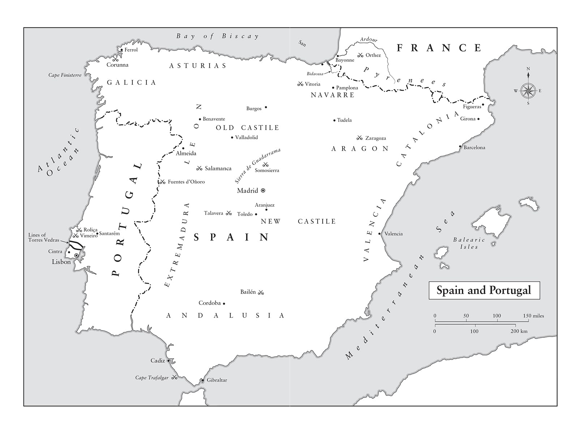

Không có nước nào ở châu Âu mà người nước ngoài có thể can thiệp vào công việc của nó vô ích như là ở Tây Ban Nha.
• Công tước Wellington nói với Huân tước Castlereagh, năm 1820
Cuộc chiến bất hạnh đó hủy hoại tôi; nó chia tách lực lượng của tôi, nhân lên gấp bội những trách nhiệm của tôi, làm suy sụp tinh thần… Tất cả các bối cảnh tạo nên những tai họa của tôi đều gắn liền với cái nút thắt tai họa đó.
• Napoleon nói về Chiến tranh Bán đảo
⚝ ✽ ⚝
Napoleon ý thức được sự cần thiết về một trật tự xã hội mới tại Pháp dựa trên việc phụng sự quốc gia thay vì sự may rủi của xuất thân, nên khi trở về Paris vào mùa hè năm 1807, ông bắt tay vào sắp xếp lại nó. “Chính tại Tilsit mà những tước vị chính của một giới quý tộc mới đã được thiết lập”, Anatole de Montesquiou, con trai Chánh thị thần của Napoleon, người khi đó là sĩ quan pháo binh dưới quyền Davout, nhớ lại. “Trong một thời gian dài, mọi chính phủ châu Âu đều chê trách Hoàng đế về việc thiếu các tước vị quanh ông. Theo họ, điều này mang lại cho Pháp một diện mạo có vẻ cách mạng”. Binh đoàn Danh dự ít nhiều đã đi tới thiết lập một hệ thống đặc quyền mới dựa trên năng lực, nhưng không thể cung cấp nền tảng cho cả một hệ thống xã hội. Vào tháng Năm năm 1802, Napoleon đã phàn nàn rằng huân chương mới của ông sẽ chỉ như “những hạt cát rời rạc” trừ phi nó được neo lại “bởi vài tảng đá hoa cương”. Là một sĩ quan quân đội, đương nhiên đầu óc ông hướng tới một hệ thống thứ tự về cấp bậc và tước vị, song ông cũng muốn tránh những khiếm khuyết tai hại của Chế độ cũ – những khiếm khuyết về thừa kế và đặc quyền tư pháp. Như vẫn vậy, ông nhìn vào thế giới cổ đại để tìm chỉ dẫn. “Một ông hoàng chẳng đạt được gì từ việc xóa bỏ giới quý tộc”, sau này ông viết trong Những cuộc chiến tranh của Caesar , “ngược lại ông ta đưa mọi thứ trở lại trật tự bằng cách để nó tồn tại ở trạng thái tự nhiên của mình, bằng cách khôi phục những gia tộc cũ dưới những nguyên tắc mới.”
Vào tháng Ba năm 1808, các tước vị bá tước, nam tước, và hiệp sĩ của Đế chế được lập ra. Bằng cách tạo nên một giới quý tộc dựa trên năng lực – trong đó 20% xuất thân từ tầng lớp lao động và 58% từ tầng lớp trung lưu – Napoleon đã kiểm soát được tham vọng phụng sự đất nước của người Pháp mang phẩm chất cách mạng. Ông không coi sự tái lập tầng lớp quý tộc là mâu thuẫn với tinh thần của Cách mạng. “Người Pháp chiến đấu vì một điều duy nhất: bình đẳng trong mắt pháp luật”, ông nói với Cambacérès. “Giờ đây, giới quý tộc của ta, như phong cách của họ, trên thực tế không phải là giới quý tộc, vì nó không hề có đặc quyền hay kế vị thế tập… sự kế vị thế tập của nó phụ thuộc vào ý chí của bậc quân chủ thông qua việc xác nhận tước vị cho con trai hay cháu của người giữ tước vị đã quá cố”. Không giống như bất cứ đâu ở châu Âu, vị thế quý tộc của một gia đình Pháp đơn giản sẽ biến mất nếu thế hệ kế tiếp thể hiện không đủ để xứng đáng được chuyển tiếp nó. Những tước vị mới của Napoleon do đó tương ứng với khái niệm quý tộc một đời của Anh, mà mãi tới năm 1958 mới được thể chế hóa.
Những gì được mô tả là sự “tái lập thứ bậc” trong đời sống Pháp bao gồm một quá trình tái tổ chức triệt để hệ thống xã hội. Trên đỉnh là các sĩ quan quân đội cao cấp, bộ trưởng, thành viên Hội đồng Đế chế, tỉnh trưởng, chủ tịch các hội đồng địa phương, thẩm phán cao cấp, thị trưởng các thành phố lớn, và một số ít học giả, chuyên gia, và nghệ sĩ. Dưới họ là hơn 30.000 thành viên của Binh đoàn Danh dự. Thấp hơn nữa là 100.000 quận trưởng, thị trưởng các thành phố nhỏ hơn, quan chức thuộc các ngành giáo dục, tư pháp, và hành chính của nhà nước, thành viên các hội đồng địa phương, các phòng thương mại, thành viên của các hội đồng quận, và các quan chức, nhân sĩ khác. Những người này chính là “những tảng đá hoa cương” của Napoleon. Nằm sâu trong lòng cuộc Cách mạng Pháp là những hạt giống tạo nên sự hủy diệt của chính nó, bởi các khái niệm tự do, bình đẳng, và bác ái vốn loại trừ lẫn nhau. Một xã hội có thể được hình thành quanh hai trong ba khái niệm, nhưng cả ba thì không bao giờ. Tự do và bình đẳng, nếu chúng được xem xét một cách nghiêm túc, sẽ xóa sạch bác ái; bình đẳng và bác ái sẽ dập tắt tự do; và bác ái cùng tự do chỉ có thể có được bằng cách hy sinh bình đẳng. Nếu kết quả bình đẳng tuyệt đối là mục đích tối hậu, như đã là vậy với phái Jacobin, nó sẽ nghiền nát tự do và bác ái. Với việc sáng lập ra một tầng lớp quý tộc mới, Napoleon đã xóa đi khái niệm bình đẳng đó, và thay vào đấy là thể hiện trong chính thể Pháp khái niệm về bình đẳng trước pháp luật mà ông hoàn toàn tin tưởng vào.
Dưới Chế độ cũ, giới quý tộc ở mọi nơi có số lượng dao động giữa 80.000 và 400.000 người; dưới thời Napoleon con số này trở nên chính xác và hạn chế hơn nhiều. Năm 1808, ông phong tước quý tộc cho 744 người, 1809 là 502, 1810 là 1.085, 1811 là 428, 1812 là 131, 1813 là 318, và 1814 là 55. Như vậy, trong khi vào năm 1789 cứ 10.000 người Pháp có bảy quý tộc thì đến năm 1814 chỉ có một trên mỗi 10.000 người. Trong số 3.263 quý tộc được Napoleon phong tước, 59% là quân nhân, 22% là viên chức, và 17% là nhân sĩ. Một số bác sĩ, nhà khoa học, nhà văn, và nghệ sĩ cũng được phong tước quý tộc.(*) Không dưới 123 trong số 131 tỉnh trưởng của Napoleon được phong tước quý tộc, còn Tòa Thượng thẩm Paris có tới bốn bá tước, ba nam tước, và 11 hiệp sĩ. Vào năm 1811, trừ ba người, tất cả các đại sứ đều là quý tộc. Hệ thống này cũng cho phép Napoleon làm sống mãi tên của các chiến thắng, bằng đất phong và tước vị mang các tên gọi như Castiglione, Auerstädt, Rivoli, và Eckmühl.(*)
Tách biệt với tầng lớp quý tộc mới, cho dù thường xuyên xen kẽ với nó, ông cũng đưa ra tầng lớp những người được trợ cấp vào năm 1806, theo đó các thần dân trung thành, các donataire , nhận được đất đai và tài sản tịch thu từ kẻ thù bị đánh bại tại các vùng lãnh thổ chinh phục được. Kèm với chúng thường là các khoản niên bổng, thường tới từ Italy, Đức, và sau này cả Ba Lan. Đến năm 1815 có 6.000 người nhận được những quà tặng bằng đất đai như thế, với tổng trị giá 30 triệu franc.
Việc lập nên giới quý tộc của đế chế cũng song hành với thái độ cứng rắn hơn trước những bất đồng quan điểm nội bộ của Napoleon. Ngày 9 tháng Tám năm 1807, ông nói tại một cuộc họp bất thường của Hội đồng Nhà nước rằng ông muốn Cơ quan Tư pháp, “mà tên gọi và mục đích của nó có vẻ xa lạ với một chính thể quân chủ”, phải bị giải thể. Việc này được thực hiện gọn ghẽ bằng một sắc lệnh sau đó 10 ngày. Một thiểu số thành viên của Cơ quan Tư pháp đã phát biểu và bỏ phiếu chống lại Giáo ước, Binh đoàn Danh dự, nhiều điều khoản của Luật Dân sự và bản tuyên bố thành lập Đế chế. Cho dù Cơ quan Tư pháp được thành lập nhằm mục đích lắng nghe những chính kiến khác biệt, nhưng Napoleon ngày càng thiên về cái nhìn của một sĩ quan quân đội trước những sự biểu lộ bất đồng quan điểm này trong hàng ngũ các nhà lập pháp; quả thực đáng chú ý khi một cơ quan như vậy đã tồn tại được dưới quyền ông tới tận tám năm. Savary giải thích trong hồi ký của mình rằng Napoleon không bao giờ bận tâm về chuyện người khác bất đồng với mình, chừng nào họ còn làm thế với tinh thần trung thành và cá nhân: “Ông không bao giờ thù hằn bất cứ ai thẳng thắn bày tỏ sự đối lập với quan điểm của mình; ông thích quan điểm của mình được bàn luận”. Trong khi ông thích bàn luận về quan điểm của mình với Cambacérès và Hội đồng, ông lại ít hào hứng hơn về việc các thành viên Cơ quan Tư pháp như Constant, Daunou, và Chénier làm điều đó. “Hãy để mắt tới Benjamin Constant”, ông nói với Cambacérès về kẻ tán gái trứ danh, “nếu ông ta xen vào bất cứ chuyện gì, ta sẽ đưa ông ta tới Brunswick ở bên cạnh bà vợ ông ta”. Cùng thời điểm ban hành sắc lệnh giải thể Cơ quan Tư pháp, Napoleon nâng giới hạn độ tuổi tối thiểu cho mọi thành viên cơ quan lập pháp lên 40. Bản thân ông vẫn chỉ mới 38 tuổi.
•••
Ngay khi trở lại Paris, Napoleon đã tập trung vào việc cải thiện nền tài chính Pháp, một nhiệm vụ được trợ giúp đắc lực từ những chiến thắng trước đó không lâu của ông. Tháng chín năm 1807, Daru lập một bản danh sách chi tiết về tiền mặt và cung ứng hàng hóa mà 22 thành phố Phổ phải trả như một phần của thỏa thuận tại Tilsit, gồm 72.474.570 franc và 7 centime tiền mặt, cùng 30.994.491 franc và 53 centime giá trị hàng hóa. Sau khi các khu vực khác được thêm vào, tổng giá trị lên tới trên 153 triệu franc. Số tiền này, cũng như việc ban bố hòa bình, đã tạo ra sự tăng vọt về niềm tin vào chính quyền của Napoleon trên Sở giao dịch Chứng khoán Paris: 5% trái phiếu chính phủ, vốn được giao dịch ở mức 17,37 vào tháng Hai năm 1800, đã vọt lên 93 vào ngày 27 tháng Tám năm 1807, rồi sau đó ổn định ở quanh 85.
Giai đoạn khi trở về sau cái mà ông gọi là chiến tranh Ba Lan không hoàn toàn thuận lợi cho Napoleon. Ngày 4 tháng Mười năm 1807 ông được ghi nhận là đã chuyển 30.000 franc cho Nữ bá tước de Barral, người phụ trách trang phục của Pauline và là vợ của một thị thần nổi tiếng phóng túng của Jérôme tại Westphalia. Ông cũng thể hiện bản tính thích kiểm soát của mình khi ra lệnh bắt giam ông Kuhn, Lãnh sự Mỹ tại Genoa vào tháng Chín năm 1807, vì đã đeo Huân chương Malta do người Anh trao cho ông này. Cùng tháng đó, ông yêu cầu được biết những nhà quý tộc Bordeaux nào và tại sao đã tẩy chay buổi vũ hội của Thượng nghị sĩ Lamartillière. Ông thậm chí còn đảm nhiệm vai trò thám tử nghiệp dư trong một vụ án mạng bí hiểm, chỉ thị cho Fouché mở lại cuộc điều tra một vụ đầu độc xảy ra từ tháng Năm năm 1805 liên quan tới “một người nào đó có tên Jean-Guillaume Pascal, đến từ Montpellier. Tên khốn này được cho là đã sát hại vợ hắn”. Napoleon ra lệnh cho cảnh sát thẩm vấn em vợ của Pascal, và một cuộc khám nghiệm được tiến hành trên con chó của cặp vợ chồng mà ông nghi ngờ có thể cũng đã bị đầu độc.
Sau một thời gian vắng mặt vì đi chiến dịch lâu như vậy, lần đầu tiên ông được tận hưởng cuộc sống gia đình trong gần một năm. Hồi Napoleon còn ở Ai Cập, Josephine đã vay tiền để mua Malmaison, một lâu đài đẹp đẽ cách Paris hơn 11 km về phía tây, và bà cùng Napoleon đã chia thời gian của họ giữa nơi này và Tuileries. Với một chuồng chim, một nhà ấm trồng cây dành cho các loại cây ngoại lai, một ngôi lầu hóng mát mùa hè, một cái tháp, một “ngôi đền tình yêu”, ruộng nho, và các cánh đồng nằm kề sông Seine, bất động sản Malmaison có tới 120 héc-ta vườn, rừng, và cánh đồng, cùng một bộ sưu tập tượng tuyệt đẹp.(*) Josephine cũng có tại đây một vườn thú với chuột túi, chim, sóc bay, linh dương, đà điểu, lạc đà không bướu, và một con vẹt mào chỉ biết nói mỗi một từ (‘Bonaparte’) mà nó nhắc đi nhắc lại không ngừng. Thỉnh thoảng bà lại để một con đười ươi cái mặc chiếc sơ mi trắng ngồi ăn củ cải cùng khách của mình tại bàn. Napoleon mang những con linh dương về từ Ai Cập, và thỉnh thoảng cho chúng hít thuốc lá.(*) “Chúng rất thích thuốc lá”, thư ký riêng của ông nhớ lại, “và có thể hít sạch cả hộp trong một phút mà chẳng làm sao cả”. Mặc dù Napoleon giữ một khẩu súng săn trong phòng làm việc của mình tại Malmaison, và thỉnh thoảng ông dùng nó để bắn chim từ một cửa sổ mở, nhưng Josephine thuyết phục ông không bắn vào những con thiên nga của bà. (Có khả năng là ông đã bắn trượt; hầu phòng Grégoire nhớ lại rằng ông “đã không tì khẩu súng trên vai đúng cách, và vì Hoàng đế yêu cầu nhồi chặt thuốc, nên cánh tay ngài luôn ám đen sau mỗi phát súng”. Có lần, ông phải bắn bảy phát mới hạ được con hươu đã bị dồn vào một góc.)
Ở thời điểm đỉnh cao, gia sản của Napoleon bao gồm 39 cung điện,(*) gần như là một quốc gia trong một quốc gia, cho dù ông chưa bao giờ tới thăm một số nơi trong đó. Lấy Louis XIV làm hình mẫu của mình, ông tái lập các lễ cầu kinh, các bữa ăn và tiếp tân buổi sáng trước công chúng, các lễ hội âm nhạc và nhiều màn trình diễn khác về Vua Mặt Trời. Ông tin chắc rằng những biểu hiện bề ngoài của sự tráng lệ sẽ tạo nên cảm giác kính phục từ dân chúng – “Chúng ta cần nói với những đôi mắt” ông nói – cũng như cổ vũ ngành công nghiệp sản xuất hàng xa xỉ của Pháp. Các cung điện có ngân sách hằng năm 23 triệu franc, lớn hàng thứ sáu trong tất cả các chi tiêu công của Pháp. Tổng cộng, ông đã tập hợp được 54.514 viên đá quý trong kho tàng cá nhân của mình, được ông nhìn nhận là không thể tách rời khỏi ngân khố Pháp (cho dù chuyện đó chẳng có gì bất thường: danh sách các khoản chi tiêu công của Anh chỉ bắt đầu được thiết lập từ năm 1760).(*)
Khi ông đi vòng quanh Pháp, tùy tùng của ông đi trên 60 cỗ xe ngựa trong một nỗ lực có chủ ý để gây ấn tượng, không khác gì việc ngày nay đoàn xe của Tổng thống Mỹ có thể lên tới 45 chiếc, một phép ẩn dụ bằng hình ảnh cho quyền lực của vị trí này. Tuy nhiên, trong đời sống riêng, ông duy trì sự giản dị của một sĩ quan quân đội xuất thân từ quý tộc nhỏ, điều vẫn luôn thể hiện con người đích thực của ông. “Khi tiếp khách từ ngai của mình”, Chaptal nhớ lại, “ông ấy xuất hiện rất xa hoa. Các huân chương ông ấy đeo được cẩn những viên kim cương rất đẹp, tương tự với chuôi kiếm của ông ấy, dây ngù và khuy trên mũ cùng khóa mũ của ông ấy. Những thứ trang phục này chẳng mấy phù hợp với ông ấy, ông ấy có vẻ khó chịu, và thường cởi bỏ chúng ra ngay khi ông ấy có thể”. Trang phục hằng ngày của ông thường là quân phục bình thường màu xanh dương của một đại tá thủ pháo thuộc Cận vệ Đế chế, hoặc quân phục màu xanh lục của khinh kỵ cũng thuộc lực lượng này, và khi biết không thể tìm ra thứ vải màu xanh lục như thế trên đảo St Helena, ông đã đơn giản lộn ngược mặt vải trong áo khoác của mình ra ngoài.
Sự đối lập giữa chuyện vắng bóng trang sức trên trang phục cá nhân của Napoleon ngoài những dịp nghi lễ trọng thể, với sự hào nhoáng về trang phục của những người ở quanh ông đã được nhiều người ghi nhận, đúng như chủ ý của việc tạo ra nó; quả thực Denon đã chỉ thị cho họa sĩ François Gérard “Chú ý nhấn mạnh sự lộng lẫy trên quân phục các sĩ quan ở quanh Hoàng đế, để điều này đối lập với sự giản dị ông ấy thể hiện và do đó lập tức làm ông ấy nổi bật lên giữa họ”. Đại úy Blaze cũng nhận xét rằng “Chiếc mũ nhỏ của ông ấy và chiếc áo khoác khinh kỵ màu xanh lục làm ông ấy nổi bật giữa đám đông các ông hoàng và tướng lĩnh đầy những kim tuyến trang hoàng trên từng đường chỉ”. Ngoài huân chương Binh đoàn Danh dự, Napoleon còn đeo huy chương Vương miện Sắt Italy của mình, nhưng ngoài ra ông không đeo thêm bất cứ huân huy chương nào trong số rất nhiều cái được trao tặng, một sự trưng diện có thể sẽ thu hút sự chú ý của một xạ thủ bắn tỉa trên chiến trường (một sự lưu tâm Nelson đáng lẽ cũng nên cân nhắc tới). Năm 1811, một danh sách tất cả trang phục của Napoleon được lập, bao gồm chỉ có chín áo khoác (để dùng trong ba năm), hai áo ngủ, 24 đôi tất lụa, 24 đôi giày, và bốn chiếc mũ. “Không được chi tiêu bất cứ khoản nào ngoại trừ sau khi được Hoàng thượng tán thành”, bản danh sách ghi chú, và khi thị thần-Bá tước Charles de Rémusat chi tiêu quá nhiều cho tủ quần áo của Napoleon, ông ta đã bị bãi chức.
Mọi thứ trong việc tổ chức các cung điện của Napoleon đều xoay quanh công việc. Bữa tối được dọn lúc 6 giờ nhưng ông thường xuyên bỏ lỡ nó, thay vì thế ăn vào bất cứ lúc nào công việc cho phép; hàng tá gà được đưa lên xiên cả ngày để lúc nào cũng có một con sẵn sàng cho ông (khó mà phù hợp với mong muốn tiết kiệm của ông). Ông ăn bất cứ đồ ăn nào được mang tới cho mình, không theo thứ tự nào cụ thể. Ông không phải là người kén ăn, và rất thích ăn mì ống. “Napoleon thích những món ăn đơn giản nhất”, một trong những thị thần của ông nhớ lại, “ông không uống rượu vang nào khác ngoài Chambertin, và hiếm khi không pha loãng”. Ngay cả Chambertin cũng không phải luôn là loại ngon nhất; khi được hỏi quan điểm của mình, Augereau đánh giá, “Tôi còn biết nhiều hơn”. Thứ rượu mạnh được đặt tên Napoleon quả thực không thích hợp chút nào vì ông không bao giờ uống rượu mạnh, và có thói quen uống một tách cà phê sau bữa sáng và một tách nữa sau bữa tối. Không có bằng chứng nào được biết rõ về việc ông từng say. Napoleon thừa nhận ông không phải là người thích ăn ngon. “Nếu ông muốn ăn một bữa tối ngon lành, hãy ăn với Cambacérès”, ông nói với Tướng Thiébault trong thời kỳ còn làm Tổng tài, “nếu ông muốn ăn một bữa tối tồi, hãy ăn với Lebrun; nếu ông muốn ăn một bữa tối nhanh chóng, hãy ăn với tôi”. Nhìn chung, ông thường dành ra không đến chục phút tại bàn ăn, trừ những bữa tối gia đình vào các tối Chủ nhật, khi đó ông có thể ngồi lại tối đa nửa tiếng. “Tất cả chúng tôi đều tuân theo dấu hiệu rời bàn ăn của Hoàng đế”, một người cùng ăn tối với ông kể lại, “phong cách của ngài khi thực hiện nghi lễ này thật dứt khoát và đột ngột. Ngài sẽ bất thần đẩy cái ghế ra, rồi đứng phắt dậy như thể bị điện giật”. Napoleon đã có lần nói rằng cho dù một số người, nhất là Josephine, từng nói với ông là ông cần phải nán lại bàn ăn lâu hơn, nhưng ông coi thời gian mình trải qua ở đó “đã là một sự lạm dụng quyền lực rồi.”
Khi ở nhà cũng như trong chiến dịch, ông chỉ ngủ khi ông cần, bất kể lúc nào trong ngày. “Nếu ông ấy ngủ”, Bộ trưởng Tài chính của ông, Bá tước Molé nhớ lại, “thì chỉ vì ông ấy nhận ra sự cần thiết của giấc ngủ và vì nó tái tạo sức lực mà ông ấy sau đó sẽ cần đến”. Ông cần ngủ bảy tiếng trong 24 tiếng, song như một thư ký nhớ lại, ông ngủ “thành vài cữ ngắn, chia ra vào ban đêm cũng như ban ngày”. Vì phòng ngủ luôn ở cạnh phòng làm việc của ông tại tất cả các cung điện, nên ông có thể làm việc trong bộ đồ ngủ vào bất cứ thời điểm nào ngày cũng như đêm, cùng với các thư ký thay nhau xoay vòng để ghi lại. “Ông ấy thường thức dậy”, một thư ký khác nhớ lại, “sau một giờ ngủ, đầu óc tỉnh táo và sáng suốt như thể ông ấy đã ngủ ngon cả đêm.”
Napoleon rất giỏi trong việc phân biệt thứ tự ưu tiên, giải quyết ngay những vấn đề khẩn cấp, tập hợp các giấy tờ quan trọng nhưng không khẩn cấp thành một tập để xem xét sau đó và ném tất cả những gì ông coi là không quan trọng xuống sàn. Trong khi Louis XVIII có một con dấu chữ ký của mình, thì Napoleon luôn đọc hết các thư từ trước khi tự tay ký tên lên chúng, còn vì tốc độ đọc cho chép lại của ông đồng nghĩa với việc các thư ký có thể đôi khi viết không chính xác. “Ý tưởng xuất hiện cực nhanh”, Napoleon nói để giải thích việc ông cần các thư ký, “và thế là tạm biệt các lá thư và dòng kẻ! Giờ đây ta chỉ có thể đọc cho chép lại. Đọc cho chép lại rất thuận tiện. Nó giống như thể người ta đang hội thoại vậy”. Ông hầu như không bao giờ ngồi xuống bàn làm việc của mình, ngoại trừ để viết thư cho những người vợ và tình nhân của ông (họ là người nhận được những lá thư duy nhất ông không đọc cho chép lại) và ký các văn bản. Ba thư ký riêng của ông – Bourrienne, người giữ vị trí này từ năm 1797 tới 1802, Claude-François de Méneval (1802-1813) và Agathon Fain (1813-1815) – tất cả đều phát triển kiểu tốc ký của riêng họ để bắt kịp cơn cuồng phong từ ngữ của ông tại bàn viết nhỏ của họ, trong khi ông ngồi trên một chiếc sô-pha bọc lụa trơn trong phòng làm việc tại Tuileries, gần một tấm rèm gấp nếp che khuất ông sau lò sưởi, một cách bố trí được lặp lại ở tất cả các cung điện của ông. Nếu họ vẫn còn làm việc vào lúc 1 giờ sáng, thỉnh thoảng Napoleon sẽ dẫn thư ký của mình vi hành ra phố Saint-Honoré, tại đó họ cùng uống những tách sô-cô-la nóng. (Có lần ông phàn nàn với Cảnh sát trưởng vào sáng hôm sau rằng những ngọn đèn tại cổng cung điện đã bị hỏng: “Ông ta không thể tưởng tượng nổi làm thế nào ta phát hiện ra điều đó”.)
Mỗi thư ký và bộ trưởng của ông lại có câu chuyện riêng về trí nhớ cũng như khả năng đọc cho chép lại phi thường của Napoleon. Câu chuyện của Bộ trưởng Nội vụ Jean Chaptal về việc ông muốn thành lập một học viện quân sự tại Fontainebleau có thể được coi là một điển hình. Napoleon bảo Chaptal ngồi xuống và đọc cho chép lại 517 điều giùm ông, hoàn toàn không có ghi chú. Chaptal mất cả đêm để sắp xếp chúng lại, sau việc đó Napoleon “nói với tôi nó ổn nhưng không đầy đủ”. Có lần ông kể với Méneval là sau khi rời Brienne, ông bắt đầu làm việc 16 tiếng mỗi ngày và không bao giờ ngừng nghỉ.
Mọi thứ quanh Napoleon diễn ra với nhịp độ chóng mặt. Molé nhớ lại ông đi từ một buổi lễ cầu kinh tới một buổi tiếp kiến ban sáng tại Saint-Cloud vào mùa hè năm 1806, “bước đi nhanh nhẹn, với một đội tháp tùng là các ông hoàng ngoại quốc và… các quan chức Pháp cao cấp, những người thở không ra hơi trong nỗ lực để theo kịp ông ấy”. Ông căm ghét việc lãng phí dù chỉ mỗi phút trong ngày, và thường xuyên thực hiện cùng lúc vài nhiệm vụ. Ông thích những cữ tắm nước nóng lâu lâu, điều ít gặp ở người châu Âu đầu thế kỷ 19, ông làm thế gần như mỗi ngày, nhưng trong một hay hai tiếng ngâm mình trong bồn tắm như thế, ông sẽ yêu cầu đọc báo hay các bài viết chính trị cho mình nghe, và ông cũng làm thế khi người hầu phòng cạo râu cho mình, và đôi khi cả trong bữa sáng. Ông gần như thích tự ngược đãi bản thân khi lắng nghe đọc báo chí Anh, thứ mà các thư ký ghét phải dịch cho ông: ông khăng khăng đòi nghe mọi thứ viết về mình, cho dù là nhục mạ. Trong những chuyến đi dài của họ bằng xe ngựa, Josephine đọc các cuốn tiểu thuyết cho ông, được lựa chọn từ bản tóm tắt những cuốn sách mới xuất bản mà ông yêu cầu tiểu thuyết gia lịch sử, nữ Bá tước de Genlis lập cho mình hằng tuần.
Cho dù ông bắt mọi người làm việc cực nhọc một cách khác thường, nhưng Napoleon rất quan tâm đến những người giúp việc cho mình, hầu như tất cả họ đều ngưỡng mộ ông. Ông quả thực là một anh hùng với những người hầu, sĩ quan phụ tá và sĩ quan liên lạc của mình, và số người phục vụ trực tiếp tình nguyện đi lưu đày cùng ông đông hơn nhiều số mà người Anh có thể cho phép, một biểu hiện đáng kể cho tài năng của ông với tư cách ông chủ. Cô Avrillon, người phục vụ cho Josephine, nhớ lại ông là người “cực kỳ lịch thiệp” và “rất rộng lượng khi ai đó phạm phải một sai sót nhỏ”. Thị thần của ông, Bá tước de Bausset, viết: “Tôi có thể thẳng thắn nói rằng hiếm có ai chừng mực trong tính cách và dễ mến trong cách cư xử như thế”. Agathon Faint nghĩ “Napoleon là một người bạn trung thành và là ông chủ tốt nhất”, không chỉ vì “ông sẵn sàng chiều lòng mọi người”. Một người đánh xe nghiện rượu được giữ lại làm việc nhiều năm sau khi anh ta lẽ ra đã bị sa thải, vì anh ta từng điều khiển một cỗ xe chở vũ khí ở Marengo.
“Tôi đã trông đợi sẽ thấy ông ấy cục cằn, và có tính khí khó lường”, Méneval nhớ lại, “thay vì thế tôi thấy ông ấy kiên nhẫn, khoan dung, dễ làm hài lòng, không đòi hỏi quá mức, vui vẻ với một sự vui vẻ thường là ồn ào và giễu cợt, và đôi khi thân thiện đầy cuốn hút”. Người thư ký duy nhất viết về Napoleon đầy phê phán là Bourrienne, vốn bị giáng chức năm 1802 vì tham nhũng nghiêm trọng. Napoleon sau này đã cho ông ta một công việc khác, Thống đốc Hamburg, nhưng Bourrienne cũng lạm dụng nó để thủ lợi cá nhân, và ông ta sau đó còn đáp lại sự tử tế của chủ nhân mình bằng nhiều năm phỉ báng.
Trong chừng mực có lúc nào đó có một buổi tối bình thường trong cuộc đời của Napoleon, nó bao gồm rất nhiều những thú vui của đời sống gia đình thị dân Pháp bình thường. Như Méneval nhớ lại:
⚝ ✽ ⚝
Napoleon khiêu vũ tại những vũ hội nhỏ tổ chức ở Malmaison vào các tối Chủ nhật, khen ngợi các con riêng của vợ về những vở kịch ngắn của họ và “tìm thấy sự cuốn hút trong đời làm cha của mình”. Ông săn hươu và lợn rừng, chủ yếu để vận động hơn là vì thú vui săn bắn, và thỉnh thoảng lại ăn gian khi chơi cờ hoặc chơi bài – cho dù ông thường trả lại tiền thắng được trong những trường hợp này. Đơn giản là vì ông không chịu nổi việc thua.
•••
Vào đầu năm 1808, Phổ đã bị khuất phục và đang có quan điểm gần gũi với Nga. Napoleon giờ đây đã có thể chuyển sự chú ý của mình sang các biện pháp để ông có thể ép Anh ngồi vào bàn đàm phán. Sau Trafalgar, đã rõ là ông không thể tái khởi động các kế hoạch tấn công, nhưng người Anh vẫn đang tích cực hậu thuẫn cho hoạt động buôn lậu trên khắp châu Âu trong nỗ lực nhằm phá hủy Hệ thống Lục địa, phong tỏa các cảng của Pháp, và không cho thấy bất cứ dấu hiệu nào muốn chấm dứt chiến tranh. Vậy là Napoleon nhìn xuống phía nam với hy vọng gây tổn hại cho thương mại Anh, điều ông luôn nghĩ là chìa khóa để bắt “quốc gia của các ông chủ cửa hàng” phải quỳ gối. Kể từ tháng Mười một năm 1800, khi ông viết cho Joseph, “Tổn hại lớn nhất chúng ta có thể gây ra cho thương mại Anh sẽ là chiếm lấy Bồ Đào Nha”, thì Napoleon đã nhìn nhận đồng minh lâu đời nhất của Anh là gót chân Achilles của nước này.(*) Trong lúc đang phi nước đại qua Dresden ngày 19 tháng Bảy năm 1807, ông đã yêu cầu Bồ Đào Nha đóng cửa các cảng của họ với tàu Anh từ tháng Chín, bắt giữ tất cả người Anh tại Lisbon và tịch thu hàng hóa Anh. Bồ Đào Nha đã không trả khoản bồi thường mà mình đồng ý trả khi cầu xin hòa bình năm 1801. Nước này cho phép tàu Anh vào các cảng của mình để mua rượu vang, mặt hàng xuất khẩu lớn nhất của mình, và có những thuộc địa rộng lớn cùng một hạm đội đáng kể, song quân đội chỉ có 20.000 người. Nước này được cai trị bởi Vương hầu João, lười biếng, béo phì, trì độn nhưng chuyên chế, bà vợ người Tây Ban Nha Carlota của ông ta đã tìm cách lật đổ chồng vào năm 1805.
Sau khi người Pháp tấn công Etruria ngày 29 tháng Tám năm 1807 để tìm cách dẹp bỏ nạn buôn lậu hàng Anh thường diễn tại đây, Thủ tướng Tây Ban Nha, Don Manuel de Godoy y Álvarez de Faria, biết mình cần hợp tác với Napoleon để giành được sự đền bù thỏa đáng cho Công chúa María Luisa, là Hoàng hậu của Etruria và là con gái của Vua Tây Ban Nha Charles IV, có chồng là Vua Louis I đã qua đời vì động kinh vào tháng Năm năm 1803. Napoleon không thích và không tin tưởng Godoy; vào năm 1801, khi Godoy yêu cầu Lucien một bức chân dung của Napoleon, ông đã vặn lại: “Anh sẽ không bao giờ gửi chân dung mình cho một kẻ đã giam giữ người tiền nhiệm của hắn trong hầm [Godoy đã cầm tù Thủ tướng trước, Bá tước Aranda, sau một thất bại của Tây Ban Nha trước bàn tay người Pháp năm 1792] và là kẻ làm theo những thói tục của Tòa án Dị giáo. Anh có thể sử dụng hắn, nhưng anh không có gì dành cho hắn ngoài sự khinh bỉ”. Ông hết sức nghi ngờ khi Godoy huy động quân đội Tây Ban Nha vào cùng ngày diễn ra trận Jena, chỉ để rồi lại nhanh chóng bãi bỏ lệnh đó khi biết kết cục của nó. Godoy cho rằng sẽ là khôn ngoan khi cho phép quân Pháp đi qua Tây Ban Nha để tấn công Bồ Đào Nha.
Trên hết, Bồ Đào Nha phải được kéo ra khỏi ảnh hưởng của Anh”, Napoleon viết cho Vua Charles ngày 7 tháng Chín năm 1807, “để buộc nước này phải cầu xin hòa bình”. Ngày 27 tháng Mười, đại diện của Godoy ký Hiệp ước Fontainebleau, bao gồm những điều khoản bí mật về việc chia Bồ Đào Nha thành ba, miền Bắc sẽ dành cho Công chúa María Luisa như sự đền bù lại Etruria, miền Trung nằm dưới sự chiếm đóng quân sự của Pháp-Tây Ban Nha, và miền Nam trở thành lãnh địa riêng của bản thân Godoy điển trai, quỷ quyệt, bỉ ổi và phô trương, người sẽ trở thành Vương hầu xứ Algarves. Ông ta vốn đã mang danh xưng Vương hầu Hòa bình có tính tự đề cao bản thân, nó nhắc tới Hiệp ước Basle mà ông ta đã thương lượng với Pháp năm 1795. (Ông ta thích danh xưng này hơn biệt danh quen thuộc “Thợ làm Xúc xích” bám chặt lấy mình, vì ông ta quê ở Estremadura, trung tâm nuôi lợn của Tây Ban Nha.) Hiệp ước đảm bảo toàn vẹn các lãnh thổ của Charles IV và sẽ cho phép ông ta mang danh xưng “Hoàng đế của Hai châu Mỹ.
Napoleon phê chuẩn Hiệp ước ngày 29 tháng Mười, thời điểm mà quân Pháp đã tiến sâu vào bán đảo Iberia. Ngày 18 tháng Mười, Junot đã vượt sông Bidasoa vào Tây Ban Nha trên đường tới Bồ Đào Nha. Ông ta không gặp bất kỳ sự kháng cự nào kể cả tại Lisbon, và ngày 29 tháng Mười một hoàng gia Bồ Đào Nha kịp trốn thoát tới Rio de Janeiro trên các chiến hạm của Hải quân Hoàng gia Anh, bị đám đông phản đối la ó trên cầu cảng vì sự tháo chạy của họ. Napoleon lệnh cho Junot đảm bảo rằng các kỹ sư công binh của ông ta vẽ lại được các tuyến đường Tây Ban Nha trên đường hành quân. “Hãy cho ta thấy khoảng cách giữa các làng, thiên nhiên của đất nước này, và các nguồn lực của nó”, ông viết, cho thấy ngay từ thời điểm đó ông đã cân nhắc tới việc tấn công đồng minh của mình.

Nền chính trị của Tây Ban Nha đang quá mục nát, còn triều đại Bourbon Tây Ban Nha thì quá sa đọa và bệnh hoạn, tới mức ngôi báu của họ có vẻ đã đến lúc chín muồi để đoạt lấy. Charles IV và người vợ độc đoán của mình, María Luisa xứ Parma, đều căm ghét Ferdinand Hoàng tử xứ Asturias, là con trai cả 24 tuổi và là người kế vị của họ (sau này là Ferdinand VII), cảm xúc này cũng được đáp lại hoàn toàn tương xứng. Cho dù ông ta có cả vợ lẫn nhân tình sống trong nhà mình, nhưng Godoy cũng là nhân tình của Hoàng hậu. Nhà vua tỏ ra cam chịu tới mức khi Godoy chặn một lá thư từ Napoleon gửi Charles cảnh báo ông ta về việc Godoy cắm sừng ông ta vài năm trước, nhưng ông ta đã đơn giản cho qua. Quyền lực của Godoy tại Tây Ban Nha lớn tới mức ông ta được phong đô đốc mà không cần lấy một lần ra biển. Ferdinand, một người cũng yếu đuối và nhu nhược như cha mình, căm ghét Godoy, một cảm xúc tương đồng từ cả hai phía. Thực tế Godoy bị căm ghét trên toàn Tây Ban Nha vì ông ta đã đưa đất nước lâm vào tình trạng thê thảm năm 1808, và nhất là vì để mất các thuộc địa vào tay Anh, thảm họa tại Trafalgar (nơi Tây Ban Nha mất 11 chiến hạm chủ lực), nền kinh tế yếu kém, tham nhũng, nạn đói, việc bán đất nhà thờ, bãi bỏ đấu bò tót, và thậm chí vì dịch sốt vàng da bùng phát ở miền Nam.
Một viễn cảnh đầy cám dỗ tự nó xuất hiện vào tháng Mười năm 1807, khi Ferdinand viết cho Napoleon – hay đúng hơn là cho “người anh hùng đã làm lu mờ tất cả những người đi trước mình”, như Hoàng tử này nịnh nọt tôn xưng – đề nghị được kết hôn với thành viên nhà Bonaparte. Cha của ông ta đã cho bắt giữ ông ta vì tội phản nghịch (dưới những cái cớ giả tạo) vào tháng đó, chỉ để rồi thả ông ta ra đầy miễn cưỡng, còn Ferdinand nhiều khả năng muốn qua mặt cha mẹ mình cũng như bảo vệ ngôi báu khỏi một cuộc xâm lăng của Pháp. Lẽ ra đây đã có thể là giải pháp lý tưởng, giúp Napoleon tránh khỏi thứ mà sau này ông gọi là “khối ung nhọt Tây Ban Nha”, nhưng ứng viên tốt nhất, đứa cháu gái lớn tuổi nhất của ông là Charlotte con gái của Lucien mới 12 tuổi. Trong thời gian ngắn ngủi lưu lại triều đình của Napoleon, cô bé đã viết vài lá thư cho cha mẹ ở Rome phàn nàn về sự đồi bại của triều đình này và xin được về nhà, và Napoleon, người đã chặn những lá thư ấy, đã nhượng bộ.(*)
Ngay khi Junot chiếm được Lisbon, ông ta chính thức phế truất hoàng tộc Braganza đang vắng mặt và tịch thu tài sản của họ, áp đặt một khoản “đóng góp” 100 triệu franc, và ban hành một bản hiến pháp bao gồm bao dung tôn giáo, bình đẳng trước pháp luật, và tự do cá nhân. Ông ta tuyên bố đường xá sẽ được xây dựng, các tuyến kênh sẽ được đào, công nghiệp và nông nghiệp sẽ được cải thiện, giáo dục công sẽ được trợ giúp, song người Bồ Đào Nha vẫn hoài nghi. Napoleon ra sắc chỉ rằng quân của Junot sẽ nhận được một chai vang Bồ Đào Nha mỗi ngày ngoài khẩu phần thường lệ của họ.
Với Bồ Đào Nha có vẻ đã được bình định, Napoleon gửi quân dưới quyền Murat tới miền Bắc Tây Ban Nha vào tháng Một năm 1808, bề ngoài là để giúp Junot, song trên thực tế là để chiếm lấy các pháo đài lớn ở San Sebastián, Pamplona, Figueras, và Barcelona, tất cả đều với sự ủng hộ của Godoy, người quyết tâm trở thành một vị quân chủ thực thụ theo các điều khoản bí mật của Hiệp ước Fontainebleau. Tây Ban Nha bị xâm lăng về mọi mặt chỉ trừ trên danh nghĩa, với sự hỗ trợ của Thủ tướng nước này. Đến 13 tháng Ba, Murat đã ở Burgos cùng 100.000 quân, và tiến về Madrid. Để đánh lừa người Tây Ban Nha, Napoleon ra lệnh “phát tán rộng rãi thông tin rằng đó là một phần trong kế hoạch của ta… vây hãm Gibraltar và tiến sang châu Phi”.(*)
Tối 17 tháng Ba năm 1808, Godoy đã bị lật đổ bởi “cuộc bạo động Aranjuez”, một sự nổi dậy của quần chúng ở cách Madrid 40 km về phía nam, nơi gia đình hoàng tộc có cung điện mùa đông, được thổi bùng lên bởi tin đồn ông ta đang lên kế hoạch đưa nhà vua và hoàng hậu sang châu Mỹ qua đường Andalusia. Một đám đông ùa vào nhà Godoy để hành hình ông ta, song ông ta đã ẩn nấp thành công trong một tấm thảm được cuộn lại (hoặc có thể là một tấm thảm rơm nào đó). Hoàng tử Ferdinand ủng hộ cuộc nổi dậy, và hai ngày sau Charles IV thoái vị. Trước đó một ngày, ông ta đã buộc phải bãi chức Godoy một cách miễn cưỡng, dẫn tới những cuộc ăn mừng rầm rộ tại Madrid. “Ta đã rất sẵn sàng cho một số thay đổi ở Tây Ban Nha”, Napoleon nói với Savary khi nghe tin, “song ta tin rằng ta thấy mọi việc đang đi theo một lộ trình khác với điều ta trông đợi”. Nhìn thấy một cơ hội để mở rộng ảnh hưởng của mình, Napoleon đã từ chối công nhận Ferdinand là vua, nói rằng Charles từng là một đồng minh trung thành của ông.
Vì tuyệt vọng, muốn có thức ăn và nước uống sau 30 tiếng lẩn trốn, nên Godoy tìm cách nộp mình cho nhà chức trách, nhưng đám đông đã tóm lấy ông ta, làm ông ta gần như bị mù một bên mắt và bị thương vào hông, song dẫu sao ông ta còn bị bắt khi vẫn sống. Bộ trưởng Tài chính của ông ta thì bị sát hại tại Madrid, nhà cửa của gia đình và bạn bè ông này thì bị đám đông cướp phá trước khi chuyển sang các cửa hàng bán rượu vang. Vào lúc đó, Napoleon đang được công chúng Tây Ban Nha và báo chí Anh nhìn nhận là người chủ mưu cuộc bạo động, dù không phải thế. Tuy vậy, ông sẽ cố gắng khai thác cơ hội mà điều này tạo ra bằng cách khiến cho các phe phái chống lại nhau. Tây Ban Nha quá quan trọng về mặt chiến lược và kinh tế nên không thể cho phép nằm lại trong tay Ferdinand, người mà Napoleon nghi ngờ chỉ là con tốt trong tay các quý tộc phản kháng và các phần tử thuộc Giáo hội (điều này ông đúng) và đang có liên minh bí mật với người Anh (điều này thì ông sai vào thời điểm ấy).
Napoleon khó có thể chấp nhận để một tình trạng hỗn loạn xảy ra tại biên giới phía nam của mình, đặc biệt khi quốc gia này cho tới lúc đó vẫn luôn đều đặn cung cấp cho ông 5 triệu franc mỗi tháng, và ngay cả sau trận Trafalgar vẫn sở hữu một lực lượng hải quân lớn mà ông sẽ cần đến nếu có lúc nào đó muốn làm sống lại giấc mơ tấn công Anh của mình. Quyền lực vốn không thích có khoảng trống, và nhà Bourbon – vốn đã cai trị Tây Ban Nha mới chỉ từ năm 1700, khi được louis XIV dựng lên – quả thực đã tạo ra điều đó. Như đảo chính ngày 18 tháng Sương mù đã cho thấy, Napoleon hoàn toàn sẵn sàng và có khả năng thực hiện một cuộc đảo chính nếu ông cho rằng nó có lợi.
Giờ đây, sau Tilsit, Đại quân không có nhiệm vụ nào trên lục địa ngoài việc đồn trú và vài hoạt động tiễu trừ du kích ở Calabria. “[Ta] đã không tấn công Tây Ban Nha nhằm đưa một người trong gia đình [mình] lên ngôi báu”, Napoleon sau này tuyên bố vào năm 1814, “mà để cách mạng hóa nó; để biến đất nước này thành một vương quốc của luật pháp, để xóa bỏ Tòa án Dị giáo, các quyền phong kiến, và những đặc quyền bất thường của một số tầng lớp”. Ông hy vọng là công thức hiện đại hóa, thứ đã có vẻ được thực hiện rất tốt tại Italy, Bỉ, Hà Lan, và những phần thuộc miền Tây Liên bang sông Rhine, có thể cũng sẽ khiến người Tây Ban Nha chấp nhận sự cai trị của ông. Tất nhiên trong tất cả chuyện này cũng có không ít lý giải duy lý khi sự đã rồi, song ông đã chân thành kỳ vọng các cải cách của mình được chào đón với một số tầng lớp tại Tây Ban Nha, và ở một mức độ nhất định đúng là như vậy. Phủ nhận việc mình thèm muốn sự giàu có từ thuộc địa Mỹ Latin rộng lớn của Tây Ban Nha, ông nói rằng tất cả những gì mình cần là 60 triệu franc mỗi năm để Pháp hóa Tây Ban Nha. Tuy nhiên, bất chấp khát vọng này, đây sẽ là một cuộc chiến tranh để thiết lập triều đại, không giống bất cứ cuộc chiến nào trước đó của ông, và theo nghĩa đó nó đại diện cho một sự đoạn tuyệt với những cuộc Chiến tranh Cách mạng trong quá khứ.
Ngày 21 tháng Ba, Charles IV rút lại tuyên bố thoái vị với lý do hoàn toàn hợp lý là tuyên bố đó đã được đưa ra dưới sự cưỡng ép. Hai ngày sau, Murat chiếm Madrid với 50.000 quân thuộc các quân đoàn của Moncey và Dupont. Lúc đầu mọi thứ có vẻ yên bình, thậm chí cả sau khi Ferdinand đã tới Madrid trong cảnh chào đón nồng nhiệt vào hôm sau. Ferdinand có cảm giác rằng Napoleon chỉ muốn loại bỏ Godoy khỏi quyền lực, và ngày 10 tháng Tư ông rời Madrid để tới một cuộc hội kiến với Napoleon gần biên giới Tây Ban Nha ở Bayonne, nơi cha mẹ ông cũng đang tới nhưng không đi cùng nhau. Trên đường ông tới Bayonne, những người dân thường Tây Ban Nha đã cởi áo khoác của họ ra và đặt dưới bánh xe ngựa của ông để “ghi lại dấu ấn của một chuyến đi đem đến khoảnh khắc hạnh phúc nhất đời họ”, họ phỏng đoán – cũng như chính Ferdinand – rằng Napoleon sẽ thừa nhận ông ta là vị vua hợp pháp của Tây Ban Nha.
•••
Napoleon tới Bayonne ngày 15 tháng Tư năm 1808, và ở tại lâu đài Marracq gần đó, ông sẽ lưu lại đó hơn ba tháng với một đơn vị Cận vệ Đế chế đóng trại ngoài bãi cỏ. Trên chiến trường, ông luôn tìm cách giành lợi thế trước đối thủ bằng cách tấn công vào điểm bản lề nơi lực lượng địch yếu nhất: giờ đây ông sắp sửa làm điều tương tự trong cuộc đàm phán với nhà Bourbon. Sự căm ghét mà Charles và María Luisa dành cho Ferdinand con trai họ và của Ferdinand dành cho họ còn lớn hơn bất cứ cảm xúc nào mà ai trong số họ cũng cảm thấy về ông. Ông rất sẵn sàng can dự vào nỗi phiền muộn riêng tư của gia đình cực kỳ bất ổn này, và vì ông có 50.000 quân đóng tại Madrid nên không bên nào có thể trị vì nếu không có sự ủng hộ của ông. Điều này cho phép ông thực hiện một ý tưởng thực sự đáng chú ý.
Theo điều khoản của một loạt các thỏa thuận tại Bayonne, Ferdinand sẽ nhường vương miện Tây Ban Nha lại cho Charles IV cha mình, với điều kiện Charles sau đó sẽ ngay lập tức nhường ngôi cho Napoleon, rồi ông sau đó sẽ lại nhường ngôi cho chính Joseph anh trai mình. Trong khi đó, Godoy được Murat đưa ra khỏi Tây Ban Nha trước sự hân hoan của María Luisa vì giờ đây có thể ở bên ông ta, và có vẻ như thêm một quốc gia nữa lại rơi vào vạt áo nhà Bonaparte. “Trừ phi ta nhầm lẫn”, Napoleon viết cho Talleyrand ngày 25 tháng Tư, “vở bi kịch này đang ở hồi năm; đoạn kết sẽ sớm diễn ra.”
Ông đã lầm: hồi hai chỉ mới sắp sửa bắt đầu. Ngày 2 tháng Năm, với các tin đồn rò rỉ từ Bayonne và điều xấu nhất ở thời điểm này đang được chờ đợi, người dân Madrid nổi dậy chống lại sự chiếm đóng của Murat, giết chết khoảng 150 binh lính của ông ta trong cuộc bạo dộng El Dos de Mayo.(*) Như ở Pavia, Cairo và Calabria, người Pháp đàn áp tàn nhẫn cuộc nổi dậy. Tuy nhiên, họ đã không phải đối mặt với một cuộc nổi dậy thống nhất dân tộc ở Tây Ban Nha. Tại một số vùng như Aragon có rất ít sự chống đối lại sự cai quản của người Pháp, nhưng ở những vùng khác như Navarre thì hoạt động chống đối diễn ra rất nhiều. Cortes(*) ở Cadiz nhận thấy việc đánh thuế hay gọi quân dịch cũng khó khăn như Joseph sẽ nhận ra. Tây Ban Nha rộng lớn tới mức tại những tỉnh nổi dậy, các chính quyền khởi nghĩa địa phương (các junta ) có thể được thành lập khắp đất nước, và Pháp phải chiến đấu trong một cuộc chiến với cả quân đội chính quy Tây Ban Nha lẫn các toán du kích địa phương.
Quân Pháp bắt đầu bằng việc vây hãm Girona, Valencia, Saragossa, và các thành phố có tầm quan trọng chiến lược khác – trên thực tế đã có nhiều cuộc hãm thành diễn ra trong Chiến tranh Bán đảo hơn tất cả các chiến trường khác trong các cuộc Chiến của Napoleon cộng lại. Như vậy, ngay trong khi Calabria vẫn còn chưa được bình định, Napoleon đã thực hiện việc chiếm đóng một vùng lãnh thổ khác rộng lớn hơn rất nhiều, ở đó cũng có rất nhiều yếu tố tương đồng: giao thông liên lạc khó khăn, các tu sĩ Thiên Chúa giáo cuồng tín, một tầng lớp nông dân bán khai, bướng bỉnh, một vị quân chủ nhà Bourbon chính thống nhận được sự trung thành từ dân chúng hơn nhiều so với ứng viên Bonaparte, và mọi triển vọng được tái tiếp tế dễ dàng nhờ Hải quân Hoàng gia Anh. Tây Ban Nha đã bị Pháp đánh bại dễ dàng vào thời kỳ 1794-1795, và Napoleon dự đoán rằng với việc không có bất cứ tướng lĩnh hay đạo quân Tây Ban Nha xuất sắc nào, chuyện này sẽ lại xảy ra. Bất chấp trải nghiệm ở Calabria, ông đã không nhận ra rằng đôi khi một cuộc nổi dậy du kích có thể hiệu quả đến thế nào nhằm chống lại kể cả đội quân hùng mạnh và có kỷ luật nhất. Tình hình càng tồi tệ hơn với việc Napoleon can thiệp vào việc chiến đấu trong cuộc chiến tại Tây Ban Nha của các tướng lĩnh sau khi ông rời đi, điều động các đơn vị từ nơi họ đã quen thuộc với địa hình, và gửi cho các sĩ quan những mệnh lệnh chỉ tới nơi sau khi chúng đã trở nên vô nghĩa trước tình hình thực tế.
•••
“Đạn chùm và lưỡi lê đã dọn quang các đường phố”, Murat báo cáo với Napoleon từ Madrid. Sau khi cuộc nổi dậy kết thúc, Murat đã xử bắn những nhóm nông dân nổi dậy bằng các đội xạ thủ, những cảnh mà sau này được Francisco Goya biến thành bất tử trong tranh của mình và ngày nay có thể xem tại Prado. Những năm sau, thư ký của Napoleon đã thêm vào hồi ký của ông một lá thư hoàn toàn ngụy tạo của Napoleon gửi Murat từ Bayonne ngày 29 tháng Ba năm 1808, hối thúc phải thận trọng và kiềm chế. Nhiều thế hệ sử gia đã mắc lừa lá thư giả mạo Bonaparte này trước khi sự thật được phát giác, bất chấp thực tế là Napoleon mãi tới ngày 15 tháng Tư mới tới Bayonne. Tuy nhiên, Napoleon quả thực đã gửi Murat một lá thư vào ngày Dos de Mayo, viết: “Ta sẽ cho ông vương quốc Naples hoặc Bồ Đào Nha. Hãy trả lời ta ngay lập tức vì chuyện này cần diễn ra trong một ngày”. (May cho ông là Murat đã chọn Naples, vì trong vòng ba tháng sau đó một đạo quân Anh đã tới Bồ Đào Nha.)
Cho dù cuộc nổi dậy Dos de Mayo hiển nhiên có những khía cạnh ái quốc, chống Pháp, chống vô thần, và ủng hộ Ferdinand, nhưng cũng có cả những vấn đề giai cấp, sở hữu đất đai, đào ngũ, buôn lậu, chủ nghĩa vùng miền, những kẻ bất tuân pháp luật chống quân dịch, phong trào bài tăng lữ, sự thiếu thốn lương thực, và sự suy sụp về thương mại, đã khiến cuộc chiến sắp xảy ra phức tạp hơn nhiều so với bản tường thuật đơn thuần về cuộc đấu tranh giữa những kẻ xâm lược Pháp tham tàn và những người kháng chiến Tây Ban Nha anh dũng, cho dù chắc chắn là có những yếu tố này. Một số toán vũ trang đánh lại người Pháp được tổ chức tốt – như lực lượng của Juan Martín Díez ở Guadalajara và Francisco Espoz y Mina tại Navarre, nhưng nhiều nhóm khác không hơn là mấy so với các băng cướp như Napoleon đã trấn áp tại Pháp khi còn là Tổng tài Thứ nhất, và bất cứ chính quyền nào cũng sẽ trấn áp. Như trong bất cứ cuộc nổi dậy du kích nào, động cơ của một số du kích là chủ nghĩa ái quốc, số khác là báo thù cho những hành vi tàn khốc không thể chối cãi, số khác là chủ nghĩa cơ hội, và số còn lại là những băng cướp tấn công chính đồng bào Tây Ban Nha của mình. Đại úy Blaze thuộc Cận vệ Đế chế đã gặp nhiều ngôi làng mà cư dân địa phương ở đây đơn giản không phân biệt giữa quân đội Pháp với các băng cướp Tây Ban Nha.
Khi tin về Dos de Mayo được đưa tới từ Madrid, Napoleon quyết định thực hiện cái kết cục mà những người nổi dậy đã hy vọng tránh được nhất. Ngày 6 tháng Năm, sau buổi lễ kéo dài một tiếng, trong đó tất cả mọi người – kể cả Charles IV ông vua già khốn khổ bị thống phong và thấp khớp – đều phải đứng, Ferdinand VII ký Hiệp ước Bayonne, thoái vị nhường ngôi lại cho cha mình.(*) Rất muốn đứa con trai đáng ghét không thể kế vị mình, hai ngày sau Charles đã trao lại tất cả quyền lực của mình cho Napoleon và đề nghị được cư trú tại Pháp. Viết thư thuyết phục Joseph chấp nhận ngôi vua, Napoleon nói: “Tây Ban Nha không phải là Naples; nó có 11 triệu dân, thu nhập hơn 150 triệu franc, chưa kể tới nguồn thu nhập lớn từ thuộc địa và quyền sở hữu ‘toàn bộ châu Mỹ.’ Đó là vương miện đưa anh vào Madrid cách Pháp ba ngày đường, nơi che chắn cho một trong các đường biên giới của Pháp. Naples ở tận cùng thế giới”. Sau này, ông sẽ ân hận vào lúc thư nhàn, nói rằng “Tôi đã phạm sai lầm lớn khi đưa gã ngốc Joseph đó lên ngai vàng Tây Ban Nha”. Khi Joseph đăng quang tại Madrid vào tháng Bảy, Murat đã nhận lãnh vương miện Naples của ông ta, và đứa con trai lớn nhất còn sống của Louis và Hortense, Vương hầu Napoleon-Louis 3 tuổi, thế chỗ Murat làm Đại Công tước xứ Berg.
Để giữ ông ta nằm dưới sự kiểm soát của Napoleon nếu người dân Tây Ban Nha bác bỏ những dàn xếp tại Bayonne, Ferdinand ở lại dinh thự đồng quê của Talleyrand tại Valençay, ông ta để cho những người ủng hộ mình coi đấy như một sự bắt cóc và giam cầm.(*) Khi viên đại tá 28 tuổi bảnh bao Don José de Palafox thuộc đội cận vệ của Ferdinand đề nghị ông ta nên tìm cách đào thoát, Ferdinand nói ông ta thích ở lại đó để thêu thùa và cắt giấy nghệ thuật. (Khi ông ta trở lại Tây Ban Nha vào mùa xuân năm 1814, ông ta đã bãi bỏ mọi cải cách tự do của Napoleon, thậm chí thiết lập lại Tòa án Dị giáo.) “Vua Phổ là một người anh hùng nếu so sánh với Hoàng tử xứ Asturias”, Napoleon nói với Talleyrand; “ông ta dửng dưng với mọi thứ; rất thiên về vật chất, ăn bốn lần một ngày và chẳng có một ý tưởng nào trong đầu”. Napoleon yêu cầu Talleyrand làm sao để Ferdinand ưa thích Valençay. “Nếu Hoàng tử xứ Asturias trở nên gắn bó với một phụ nữ xinh đẹp, sẽ chẳng có hại gì cả”, ông viết, “nhất là nếu chi phối được cô”. Ferdinand bị ảnh hưởng bởi thứ mà ngày nay được gọi là Hội chứng Stockholm, nên ông ta đã viết thư cho Napoleon vào tháng Mười một năm 1808 để chúc mừng ông nhân một chiến thắng của Pháp trước quân đội Tây Ban Nha trong trận Tudela, và thêm lần nữa cố đề nghị kết hôn với nhà Bonaparte. Charles IV cha ông ta thoạt đầu tới Marseilles, rồi sau đó tới sống lặng lẽ tại Rome trong phần đời còn lại. Cho dù Napoleon đồng ý trả cho nhà Bourbon khoản trợ cấp 10 triệu franc hằng năm, nhưng ông cũng đảm bảo rằng tất cả sẽ được Tây Ban Nha hoàn lại, và ngay từ tháng Bảy năm 1808 đã viết cho Mollien: “Không phải vội trong việc trả trợ cấp cho Vua Tây Ban Nha – ông ta không thiếu tiền.”
Với mọi lời chỉ trích sẽ trút xuống Napoleon về cuộc cướp bóc Tây Ban Nha của ông, người ta hay quên rằng trong cùng năm đó Sa hoàng Alexander đã chiếm Phần Lan từ tay Thụy Điển trong một cuộc chiến ngắn song cũng bất chính không kém. “Ta bán Phần Lan lấy Tây Ban Nha”, như Napoleon nói, song ông đã nhận được phần tệ nhất trong cuộc trao đổi. Ông đã không cần đưa ra những lời đe dọa thẳng thừng với bất cứ ai, hay thậm chí còn chẳng phải thực sự chiến đấu để ngai vàng Tây Ban Nha rơi vào tay mình, song sai lầm của ông là đã tin rằng, như ông nói với Talleyrand hồi tháng Năm, “Người Tây Ban Nha cũng giống các dân tộc khác và không phải là một giống nòi riêng; họ sẽ vui mừng chấp nhận các thiết chế của đế chế”. Thay vì vậy, họ gọi Joseph là “El Rey Intruso” (vị vua không mời mà tới), và thậm chí trước khi ông ta tới Madrid ở đây đã nổ ra những cuộc nổi dậy quy mô lớn tại Biscay, Catalonia, Navarre, Valencia, Andalusia, Estremadura, Galicia, León, Asturias, và một phần của cả hai xứ Castile, đồng thời nhiều cảng trên bán đảo Iberia được bàn giao cho Hải quân Hoàng gia Anh. Sự nóng vội đã thắng thế trong Napoleon. Như Savary sau này thừa nhận: “Chúng ta đã vội vã đẩy câu chuyện đến hồi kết, và chúng ta đã không thể hiện đủ sự quan tâm tới lòng tự tôn dân tộc.”
Ngày 2 tháng Sáu, Napoleon tập hợp ở Bayonne tất cả các quý tộc cao cấp Tây Ban Nha mà ông có thể, để thông qua bản hiến pháp thành văn đầu tiên của thế giới nói tiếng Tây Ban Nha. Hiến pháp này bãi bỏ các đặc quyền và Tòa án Dị giáo, giữ lại Nghị viện quốc gia (Cortes) với ba cấp, và thiết lập Thiên Chúa giáo là tôn giáo duy nhất của đất nước. Nó chắc chắn thu hút những người cộng tác thân Pháp, phần lớn thuộc tầng lớp trung lưu ở các ngành nghề chuyên môn, được khai sáng và theo khuynh hướng tự do, được gọi là các josefino hay afrancesado (thân Pháp), song họ chỉ là thiểu số rất nhỏ trong dân cư của một quốc gia mà vào thời điểm đó đa số vẫn sống ở nông thôn, mù chữ, lạc hậu về kinh tế, nhiệt thành Thiên Chúa giáo, và phản động. (Các ghế tại hội đồng thành phố ở Tây Ban Nha vẫn là thế tập tới tận năm 1804 và Tòa án Dị giáo vẫn hoạt động.)
“Ta đã túm sát sạt cơ hội Định mệnh ban cho ta để phục hưng Tây Ban Nha”, Napoleon sau này nói với một trong các thư ký của ông. Có lẽ một trong những lý do khiến ông trông đợi người Tây Ban Nha sẽ cộng tác với chế độ của mình là chính bố ông cũng từng là một người cộng tác thân Pháp; nếu thế ông hẳn đã phải nhớ lại lòng căm thù thời trẻ của mình với việc Pháp chiếm đóng Corse, và hẳn đã nhìn nhận Tây Ban Nha như một đảo Corse được phóng đại. Thậm chí cả thị thần của Napoleon và là một người ngưỡng mộ ông, Bausset, cũng phải thừa nhận là bản hiến pháp được đón nhận “với sự im lặng và dửng dưng hoàn toàn” tại Tây Ban Nha bị Pháp chiếm đóng và với “sự khinh thường cay nghiệt” ở mọi nơi khác.
Ngày 25 tháng Năm, thành phố pháo đài trung cổ Saragossa, thủ phủ của Aragon, nổi dậy khởi nghĩa dưới sự chỉ huy của Đại tá Palafox, người đã trốn khỏi Pháp và ăn mặc như một nông dân. Ông ta chỉ có 220 người và số tiền Tây Ban Nha tương đương 20 bảng 6 shilling và 8 penny trong ngân khố, dẫu vậy ông ta vẫn tuyên chiến với Đế chế Pháp. Cho dù vào ngày 8 tháng Sáu tại Tudela, Tướng Charles Lefebvre-Desnouettes đã đánh tan một lực lượng do anh trai của Palafox là Hầu tước xứ Lazán chỉ huy, khi ông này tìm cách công kích Saragossa một tuần sau đó với 6.000 quân, nhưng đã bị đánh lui với 700 người thương vong; cuộc vây hãm đầu tiên thành phố 60.000 dân này bắt đầu. Khi Lefebvre-Desnouettes yêu cầu Palafox đầu hàng với hai từ “La capitulation” (Đầu hàng), Palafox đáp lại bằng ba từ: “Guerra al cuchillo” (Đánh tới lúc phải dùng dao).
•••
Cho dù một trong những lý do chính khi xâm lược Tây Ban Nha của Napoleon là tìm cách nắm lấy hải quân Tây Ban Nha để có thể hồi sinh giấc mơ tấn công Anh, nhưng vào ngày 14 tháng Sáu người kế nhiệm Đô đốc Villeneuve là Đô đốc François de Rosily-Mesros đã buộc phải đầu hàng và giao nộp cho quân đội Tây Ban Nha một phần nhỏ của hạm đội Pháp – sáu tàu – đang thả neo tại Cadiz, không bị đánh chìm hay bắt sống ở Trafalgar.(*) Napoleon phải chịu thêm một đòn nữa vào ngày 25 tháng Sáu, khi ông hay tin Đại Công tước Charles đã ra lệnh gọi quân dịch 150.000 người tại Áo. Ông lệnh cho Champagny cảnh cáo Vienna rằng quân đội của ông vẫn còn khá mạnh với 300.000 người, nhưng nó không có tác dụng. Một tháng sau, ông nói với Jérôme: “Áo đang vũ trang; họ chối bỏ điều đó; dù họ đang vũ trang chống lại chúng ta… Nếu Áo đang vũ trang, chúng ta cũng thế… Không có bất cứ ác cảm nào giữa Áo và ta, ta không đòi hỏi gì từ họ, và lý do duy nhất ta vũ trang là vì họ đã làm vậy.”
Napoleon phỏng đoán rằng cho dù nếu Joseph không được chào đón như một vị cứu tinh-nhà cải cách ở Tây Ban Nha, ông vẫn luôn có thể đánh bại quân đội Tây Ban Nha trên chiến trường, và quả thực vào ngày 14 tháng Sáu Bessières đã đánh bại Thống tướng Don Gregorio de la Cuesta và Đạo quân Galicia của Tây Ban Nha trong trận Medina del Rioseco. Nhưng chỉ tám ngày sau một tai họa đã giáng xuống quân Pháp, khi Tướng Pierre Dupont cùng toàn bộ quân đoàn của mình gồm 18.000 quân, 36 khẩu pháo và tất cả quân kỳ đầu hàng trước Đạo quân Andalusia của Tướng Francisco Castaños sau khi bị đánh bại trong trận Bailén. Hải quân Hoàng gia Anh, bên không tham gia thỏa thuận các điều kiện đầu hàng, từ chối cho đạo quân của Dupont hồi hương về Pháp như Castaños đã hứa, và đưa họ tới đảo nhỏ Balearic thuộc Cabrera, hơn một nửa số này bị chết đói tại đó, còn Dupont và các sĩ quan cao cấp được phép hồi hương.
Tin về Bailén chấn động khắp châu Âu; đó là thất bại tồi tệ nhất trên đất liền của Pháp kể từ năm 1793. Napoleon tất nhiên là hoàn toàn tái mặt. Ông đưa Dupont ra tòa án binh, tống giam ông ta tại pháo đài Joux hai năm và tước bỏ tước hiệu quý tộc của ông ta (ông ta vốn là một bá tước của đế chế), và sau này nói, “Trong số tất cả tướng lĩnh đã phục vụ tại Tây Ban Nha, đáng lẽ chúng ta đã phải chọn ra một số và đưa lên đoạn đầu đài. Dupont đã làm chúng ta thua trận ở Bán đảo để bảo vệ thành quả cướp bóc của y”. Trong khi đúng là quân đoàn của Dupont mang theo quá nhiều đồ sau khi cướp phá Córdoba, ít có viên tướng Pháp nào lại có thể thoát khỏi cái bẫy Castaños đã bày ra cho mình. Dẫu vậy, Napoleon nhất quyết yêu cầu rằng Cécile, vợ của Tướng Armand de Marescot, người đã ký thỏa thuận đầu hàng, phải bị loại khỏi đội hầu gái của Josephine, “cho dù cô có thể vô tội tới đâu đi nữa”. Trong một buổi tiếp tân tại Tuileries, ông đã nắm lấy cổ tay Tướng Legendre, người cũng đã ký vào thỏa thuận đầu hàng, rồi hỏi, “Tại sao bàn tay này không bị chặt đi?”
“Có vẻ ông ta làm rất tốt mọi thứ khi chỉ huy một sư đoàn”, Napoleon viết cho Clarke về Dupont, “nhưng đã làm thật kinh khủng khi là một thủ lĩnh”. Đó là một vấn đề xuất hiện thường xuyên với các trợ thủ của Napoleon mà bản thân Napoleon đã bị trách cứ về nó, bị buộc tội là kiểm soát quá mức khiến cho sự chủ động bị bóp nghẹt. Có những lúc ông tự trách mình về thực tế là phần lớn trợ thủ của mình, kể cả các thống chế, có vẻ như chỉ thể hiện tốt nhất khi ông có mặt. Thế nhưng bên cạnh việc nhận lệnh tiến vào Andalusia, thì Dupont không hề bị tràn ngập với các mệnh lệnh. “Trong chiến tranh, nhiều người chẳng là gì, nhưng một người là tất cả”, Napoleon viết cho Joseph ngày 30 tháng Tám. Suốt một thời gian dài được hiểu như một cách diễn đạt ích kỷ về sự vô tâm với binh lính của chính mình, nhưng câu này thực ra được viết để ám chỉ tới đội quân của Dupont, trong một lá thư đầy tự vấn: “Cho tới lúc này chúng ta đã phải tìm kiếm ví dụ cho chuyện như vậy chỉ có trong lịch sử các kẻ thù của chúng ta; thật không may hôm nay chúng ta lại tìm thấy nó trong hàng ngũ của mình”. Đây không phải là lời tán tụng thiên tài của chính mình, mà thực tế là sự thừa nhận rằng một thủ lĩnh tồi có thể mang tới tai họa.
“Anh không nên nghĩ việc chinh phục một vương quốc là điều gì đó phi thường”, Napoleon đã viết cho Joseph trước khi ông biết tin về Bailén. “Philip V và Henri IV đã phải chinh phục vương quốc của họ. Hãy vui vẻ, và đừng cho phép mình bị tác động, và đừng nghi ngờ rằng mọi thứ sẽ kết thúc tốt đẹp hơn và nhanh hơn anh nghĩ”. Joseph vội vã chuồn khỏi thủ đô của mình chỉ 11 ngày sau khi tới nơi, chạy trốn 216 km lên phía bắc tới Burgos. Các cuộc vây hãm Girona và Saragossa được chấm dứt lần lượt vào ngày 14 và 16 tháng Tám; Bessières rút khỏi biên giới Bồ Đào Nha, và số lượng lớn quân bắt đầu được điều từ phần còn lại của Đế chế về Tây Ban Nha. “Quân đội được tổ chức hoàn hảo để chặn đứng những kẻ nổi loạn”, Napoleon viết cho Joseph ngày 16 tháng Tám, “song nó cần một cái đầu”. Tất nhiên cái đầu đó nên là ông, song từ tháng Sáu ông đã thu xếp gặp Sa hoàng Alexander cho một hội nghị nữa vào tháng Chín, nên ngay cả một lá thư từ Joseph đề nghị được phép thoái vị vốn đã khiến Napoleon rơi vào một cơn cuồng nộ nữa, cũng không thể thuyết phục được ông tới Tây Ban Nha. Ông sẽ không có mặt tại đó trong ba tháng nữa, trong thời gian này tình hình không ngừng xấu đi.
Trong khi Joseph tất tưởi tới Burgos, Napoleon đã rời Bayonne tối 22 tháng Bảy tới thăm Pau, Toulouse (tại đây ông tới thăm kênh đào Midi), Montauban, Bordeaux (tại đây ông nhận được tin về Bailén ngày 2 tháng Tám), Pons, Rochefort (tại đây ông tới thăm dinh tỉnh trưởng, bến cảng, kho quân khí, và bệnh viện), Niort, Fontenay (tại đây ông tới thăm thành phố mới Napoléon-Vendée mà ông đã ra lệnh xây dựng ba năm trước), Nantes (tại đây ông dự một vũ hội tại rạp xiếc Mũ Đỏ cùng Josephine, người đã tới đó gặp ông), Saumur, Tours, Saint-Cloud (tại đây ông đi săn và có một cuộc trao đổi nóng nảy kéo dài 75 phút với Vương hầu Clemens von Metternich về việc tái vũ trang của Áo), Versailles (tại đây ông xem vở ba lê Vénus et Adonis (Venus và Adonis), và Tuileries (tại đây ông gặp Đại sứ Ba Tư). Tại thành phố Napoleon-Vendée dự định sẽ là kiểu mẫu, ông rất tức giận trước việc các ngôi nhà chỉ được xây bằng bùn và rơm tới mức rút kiếm ra đâm vào tường ngập tới tận chuôi, trước khi sa thải nhà thầu phụ trách xây dựng. Tại Toulouse, ông yêu cầu được gặp người đã xây dựng cây cầu qua kênh đào Midi. Trong quá trình hỏi chuyện kỹ sư trưởng, người tự giới thiệu bản thân, Napoleon nhận ra dù ông ta đang hy vọng tâng công, nhưng ông ta không thể là người đã xây cầu, vì thế ông yêu cầu tỉnh trưởng là ông Trouvé đưa người xây cầu thực sự tới và nói với người này, “Ta rất vui mừng vì đã thân chinh tới đây, nếu không ta đã không thể biết ông là tác giả của một công trình đẹp đẽ đến thế, và hẳn đã khiến ông bị mất phần thưởng mà ông xứng đáng được nhận”. Với một thứ công lý đầy thi vị hiếm thấy trong lịch sử, ông đã trao cho người xây cầu công việc của kỹ sư trưởng.
Ngày 7 tháng Chín, Napoleon nhận thêm tin xấu, lần này là tin Junot đầu hàng quân Anh ở Bồ Đào Nha sau khi thua các trận Roliça và Vimeiro trước Huân tước Arthur Wellesley chỉ huy một lực lượng viễn chinh Anh nhỏ bé chỉ có 13.000 quân.(*) Theo những điều kiện rất khoan dung của Hiệp ước Cintra ký ngày 30 tháng Tám – vì nó mà Wellesley sau đó bị đưa ra tòa án binh, dù cuối cùng được tha bổng – đạo quân của Junot với toàn bộ vũ khí và thậm chí cả chiến lợi phẩm được Hải quân Hoàng gia Anh đưa về Pháp, song không gì có thể che giấu được thực tế là Pháp đã mất Bồ Đào Nha. Napoleon bị chỉ trích vì đã không nhìn nhận Wellington (khi ông ta quay lại vào tháng Tám năm 1809) nghiêm túc hơn vào thời điểm này, song nếu được nhìn nhận trong bối cảnh những cuộc viễn chinh đổ bộ thất bại trước đó của người Anh – vào Hà Lan năm 1799, Naples năm 1805, Bắc Đức năm 1805-1806, Stralsund, Alexandria và Nam Mỹ năm 1807, Thụy Điển năm 1808 – thì thái độ của ông là có thể hiểu được. Trong năm năm kế tiếp, Wellington đã giúp đỡ lực lượng chính quy cũng như du kích Tây Ban Nha và Bồ Đào Nha rất nhiều để đánh bật người Pháp khỏi Iberia với cái giá phải trả chưa tới 10.000 mạng người Anh. Khi đã rõ ràng rằng Wellington quả thực nhiều khả năng là một đối thủ đáng gờm, vào tháng Tám năm 1810 Napoleon chèn thêm một đoạn vào tờ Moniteur mô tả ông ta như một “tướng sepoy” đơn thuần, nghĩa là một quân nhân chỉ biết chỉ huy lính Ấn Độ. Có lẽ ông không hề biết những người lính Ấn Độ chiến đấu cho người Anh trong đó có một số chiến binh rất xuất sắc.
Từ Saint-Cloud, ngày 18 tháng Chín, Napoleon ban bố một lời tuyên bố kinh điển khác, hứa hẹn hòa bình một khi “con báo” (tức Anh) bị đánh bại, chiếm đóng Gibraltar và báo thù thất bại ở Bailén. “Hỡi binh lính, ta cần các bạn”, ông tuyên bố:
⚝ ✽ ⚝
Một chiến thắng như thế chắc hẳn sẽ càng dễ dàng hơn, vì như ông nói với Joseph về các thần dân mới của ông ta, “Dân Tây Ban Nha ti tiện và hèn nhát, khiến ta nhớ tới những người Ả rập ta từng biết.”
•••
Napoleon đã sử dụng thời gian của ông tại Paris rất hiệu quả, đảm bảo rằng cơ quan lập pháp thông qua biện pháp gọi quân dịch 160.000 lính từ các đợt của năm 1806 tới 1809. Ông tới xem một bức tranh toàn cảnh vẽ bối cảnh Tilsit trên Đại lộ Capucines ngày 21, và hôm sau đi Erfurt, cách đó 640 km, quãng đường ông vượt qua trong năm ngày.
Hội nghị tại Erfurt diễn ra trong bối cảnh quan hệ Pháp-Nga đã dịu đi đáng kể. Lúc này, như ông nói với Savary, “là khoảnh khắc để đánh giá sự vững chắc của công việc ta làm tại Tilsit”. Napoleon đã viết những lá thư nồng ấm cho Alexander trong suốt cả năm – “Trong vài dòng ngắn ngủi này, tôi đã bày tỏ toàn bộ tâm hồn mình với bệ hạ… thành quả của chúng ta tại Tilsit sẽ quyết định vận mệnh của thế giới” – nhưng với cuộc khủng hoảng sau thất bại ở Friedland đã lắng xuống và Phần Lan đã được thu nạp vào đế quốc của ông ta, thì Alexander đang trở nên lãnh đạm trước một mối liên minh đã khiến ông ta phải trả giá không ít trong nước vì Hệ thống Lục địa bị phản đối gay gắt. Trước đó trong tháng, ông ta đã viết thư cho mẹ là Thái hậu Maria Feodorovna, nói “Lợi ích của chúng ta buộc con” phải thiết lập một liên minh với Napoleon, nhưng “Chúng ta sẽ chứng kiến sự sụp đổ của ông ta một cách thản nhiên, nếu đó là ý nguyện của Chúa… chính sách khôn ngoan nhất là chờ đợi thời điểm thích hợp để hành động”. Ông ta nói với mẹ, rằng tới Erfurt là cần thiết, vì “điều đó sẽ cứu Áo và duy trì sức mạnh của họ cho khoảnh khắc quyết định khi họ có thể được sử dụng cho lợi ích chung. Khoảnh khắc này có thể đã cận kề, nhưng họ vẫn chưa lên tiếng; thúc đẩy họ sẽ làm hỏng mọi thứ, đánh mất mọi thứ”. Trong khi đó, Nga “phải được hít thở tự do trong một thời gian, và trong quãng thời gian quý báu này, tăng cường các phương tiện và lực lượng của mình… Chúng ta phải hành động thế nào cho tuyệt đối kín đáo nhất chứ không phải là để lộ quá trình vũ trang hay chuẩn bị của chúng ta, hay lớn tiếng tuyên bố chống lại người mà chúng ta đang thách thức”. Trong những lá thư riêng này Alexander vẫn gọi ông là “Bonaparte” và đôi khi là “gã người Corse”. Trong khi ra lệnh cho Bá tước Nikolai Rumiantsev Bộ trưởng Ngoại giao của mình tỏ ra gần gũi với Pháp, thì Alexander đang chuẩn bị cả về ngoại giao lẫn quân sự cho “thời điểm thích hợp để hành động.”
Thành phố Erfurt nằm ở vùng Thuringia xinh đẹp được chọn cho hội nghị, vì đó là một vùng đất thuộc Pháp nằm lọt giữa Liên bang sông Rhine, một lãnh địa đã thuộc về cá nhân Napoleon kể từ thỏa thuận Tilsit. Napoleon gặp Alexander trên con đường cách thành phố 8 km vào Thứ tư 28 tháng Chín; họ xuống xe ngựa và “ôm hôn nhau thân mật”. Alexander đeo chiếc thập tự lớn của Binh đoàn Danh dự, còn Napoleon đeo huân chương St Andrew của Nga. Tại Tilsit, Alexander đã tặng Napoleon một món đồ bằng đá khổng tước hiện nay được bày trong Phòng khách Hoàng đế ở Trianon Lớn tại Versailles, vì thế tại Erfurt Napoleon tặng Alexander một trong hai bộ đồ sứ Sèvre duy nhất về chủ đề Ai Cập có các cảnh từ cuốn Voyage dans la Basse et la Haute Égypte (Du hành ở Hạ và Thượng Ai Cập) của Denon. Bộ đồ này đã được mô tả chính xác như một trong những món quà sang trọng nhất từng được một nguyên thủ tặng cho một nguyên thủ khác.(*) Napoleon thu xếp để Alexander ngồi bên phải ông tại các bữa ăn, họ tới thăm chỗ ở của nhau, xuống tận tiền sảnh đón và tạm biệt nhau mỗi lần gặp gỡ, và ăn tối với nhau gần như mỗi ngày. Thậm chí họ còn luân phiên cung cấp mật khẩu ban đêm cho người phụ trách gác đêm mỗi tối.
Người ta vẫn có thể thấy nơi Sa hoàng ở lại tại Angerplatz, và nơi Napoleon ở lại tại nơi hiện nay là dinh thủ hiến, cũng như tòa dinh thự theo phong cách baroque cổ điển 1715 Kaisersaal nơi họ gặp nhau. Napoleon mang theo một đoàn tùy tùng đông đảo, bao gồm Berthier, Duroc, Maret, Champagny (Bộ trưởng Ngoại giao), Rémusat, Savary, Caulaincourt, Daru, Lauriston, Méneval, Fain, bác sĩ Yvan của ông, bốn giám mã và tám hầu phòng. Ông đã bãi chức Bộ trưởng Ngoại giao của Talleyrand vào tháng Tám năm 1807 vì các vua của Bavaria và Württemberg đã phàn nàn về số tiền ông ta đòi hối lộ. Dẫu vậy, ông vẫn giữ ông ta lại với chức Phó Đại tuyển hầu, có quyền tiếp cận các cung điện và cá nhân ông. Napoleon thích trò chuyện với Talleyrand – “Ông biết rõ sự trân trọng và gắn bó của ta với ông bộ trưởng đó”, ông nói với Rapp – vì thế ông đã sẵn sàng bỏ qua, và có lẽ là hoàn toàn không nhận ra, rằng việc tiếp cận được ông đã cho phép Talleyrand bán các bí mật bất cứ khi nào ông ta muốn. Napoleon đưa ông ta tới Erfurt vì kinh nghiệm và những lời khuyên của ông ta. Vì Talleyrand đã cổ vũ Napoleon hành quyết Công tước d’Enghien, ban hành các Sắc lệnh Berlin thiết lập Hệ thống Lục địa và ủng hộ việc xâm lược Tây Ban Nha, nên sẽ là đáng kinh ngạc nếu Napoleon tiếp tục tìm kiếm lời khuyên từ ông ta, nhưng ông đã làm thế. Vào lúc này mang ông ta theo là một sai lầm nghiêm trọng, vì Talleyrand không tha thứ cho Napoleon bởi đã bãi chức mình, nên (để đổi lấy tiền mặt) ông ta đã ngầm tiết lộ các kế hoạch của Pháp cho cả người Nga lẫn người Áo, trong khi khuyên Napoleon rút khỏi Đức. “Hoàng thượng”, Talleyrand nói với Alexander tại một trong vài cuộc gặp bí mật ở Erfurt, “ngài đến đây để làm gì? Ngài phải là người cứu châu Âu, và cách duy nhất để làm thế là ngài sẽ phải chống lại Napoleon. Người Pháp là một dân tộc văn minh; quân chủ của họ thì không.”
Alexander mang theo 26 quan chức cao cấp trong đoàn tùy tùng của mình. Ngoài ra cũng có bốn vị vua hiện diện – của Bavaria, Saxony, Westphalia, và Württemberg – cũng như Vương hầu-Tổng Giám mục của Liên bang, Karl Dalberg, hai Đại Công tước và 20 ông hoàng khác, với thứ bậc địa vị được thiết lập theo thời điểm họ gia nhập Liên bang sông Rhine. (Bausset nhận định đúng đắn rằng đây là một động thái thông minh của Napoleon nhằm đem đến cho Liên bang nhiều vị thế hơn.) Vẻ thân mật công khai – và các vũ hội, hòa nhạc, duyệt binh, tiếp tân, dạ tiệc, kịch, những chuyến đi săn, và pháo hoa – không có nghĩa là các cuộc đàm phán dễ dàng. Phần lớn những cuộc thảo luận quan trọng diễn ra trực tiếp giữa hai Hoàng đế. “Hoàng đế Alexander của ông cứng đầu như một con la”, Napoleon nói với Caulaincourt. “Ông ta vờ điếc khi những điều ông ta phải nghe một cách miễn cưỡng được nói ra”. Napoleon trêu đùa Caulaincourt vì thân Nga (vì thế mới có bốn chữ từ “hoàng đế của ông”) nhưng đúng là Sa hoàng không muốn lắng nghe những bằng chứng của Napoleon về việc các thanh tra hải quan của Nga lén lút cho phép hàng hóa Anh vào St Petersburg và những nơi khác. Vào một thời điểm trong cuộc đàm phán, Napoleon ném mũ của mình xuống đất và bắt đầu đá vào nó. “Ngài nóng nảy trong khi tôi bướng bỉnh”, một Alexander không chút bối rối nói. “Nhưng bằng cách tức giận thì không ai đi đến đâu được với tôi. Hãy nói chuyện, thảo luận các vấn đề, nếu không tôi sẽ rời khỏi đây.”
Việc Nga gia nhập Hệ thống Lục địa đã gây tổn hại cho nền kinh tế của mình, ngăn cản nước này bán lúa mì, gỗ, mỡ làm xà phòng và sợi gai cho Anh. Bản thân sự tồn tại của Đại Công quốc Warsaw khiến Nga quan ngại về sự tái lập của một vương quốc Ba Lan. Về phần mình, Napoleon nhìn nhận không thiện cảm về những dự định của Nga chống lại Thổ Nhĩ Kỳ, ông không muốn một hạm đội hoạt động ở vùng biển không bị đóng băng vào mùa đông của Nga hiện diện ở Địa Trung Hải. Phần lớn hội đàm tại Erfurt chỉ mang tính tự biện. Napoleon tán thành trên lý thuyết mong ước của Alexander muốn giành thêm lãnh thổ từ tay Thổ Nhĩ Kỳ ở Moldovia và Wallachia – Pháp sẽ được đền đáp về điều này – trong khi trên lý thuyết Alexander hứa sẽ “hợp lực” với Napoleon trong trường hợp một cuộc chiến tranh của Pháp chống lại Áo nổ ra, cho dù thêm một thất bại nữa của Áo sẽ càng làm cán cân quyền lực ở châu Âu nghiêng hơn về phía Pháp.
Dường như một chủ đề mà Napoleon có thể đã thảo luận là khả năng ly dị Josephine, vì chỉ tám ngày sau khi Alexander trở về St Petersburg, Thái hậu Nga thông báo về hôn lễ giữa con gái bà, cũng là em gái Alexander, nữ Đại Công tước Catherine Pavlovna, với Hoàng thân George xứ Holstein-Oldenburg, em trai của người thừa kế Công quốc Oldenburg, một công quốc nằm ở bờ biển Baltic không thuộc về Liên bang sông Rhine. Theo một sắc lệnh đặc biệt từ thời Sa hoàng Paul I, các em gái của Alexander chỉ có thể kết hôn khi được mẹ họ cho phép, vì thế Alexander có thể chân thành tuyên bố là ông ta không đưa ra quyết định, bất chấp việc ông ta là “Kẻ chuyên chế của Tất cả người Nga”. Với Anna, người em gái còn lại mới 13 tuổi chưa kết hôn của Alexander, thì cả hai công chúa nhà Romanov dường như đã được an toàn tránh khỏi điều mà Maria Feodorovna có thể đã nhìn nhận như sự tàn phá đầy đe dọa của con quái vật đảo Corse.
•••
Napoleon tận dụng cơ hội có mặt tại Erfurt để gặp gỡ người hùng văn chương vĩ đại nhất của ông đang còn sống, người sống ở Weimar chỉ cách đó 24 km. Ngày 2 tháng Mười năm 1808, Goethe ăn trưa cùng Napoleon tại Erfurt, với Talleyrand, Daru, Savary, và Berthier cùng dự. Khi Goethe bước vào phòng, Hoàng đế thốt lên, “Voilà un homme!” (“Đúng là một người xuất chúng!”) hay cũng có thể là “Vous êtes un homme!” (“Ngài là một người xuất chúng!”). Hai người trò chuyện về Werther , về vở kịch Mahomet của Voltaire mà Goethe đã dịch, và về kịch nói chung.(*) Napoleon phàn nàn rằng Voltaire đáng ra không nên “tạo ra một bức chân dung thiếu thiện cảm đến thế về con người chinh phục thế giới” Julius Caesar trong vở kịch La Mort de César (Cái chết của César) của mình. Goethe sau này thuật lại rằng Napoleon “đưa ra các nhận xét với một trình độ trí tuệ cao, như một người nghiên cứu những cảnh bi kịch với sự chăm chú của một thẩm phán hình sự”. Napoleon nói với ông ta rằng ông cảm thấy sân khấu Pháp đã chệch quá xa khỏi tự nhiên và sự thật. “Chúng ta giờ đây biết làm gì với Định mệnh chứ?” ông hỏi, ám chỉ tới những vở kịch trong đó định mệnh được ấn định trước là yếu tố quyết định. “Chính trị là định mệnh”. Khi Soult tới, Napoleon dành ra chút thời gian bàn bạc về các công việc liên quan tới Ba Lan, cho phép Goethe chiêm ngưỡng các bức thảm và chân dung, trước khi quay lại trò chuyện về đời sống cá nhân và gia đình của Goethe – “Gleich gegen Gleich” (một cách bình đẳng), như Goethe sau này kể lại.
Họ gặp lại nhau tại một vũ hội ở Weimar bốn ngày sau, tại đây Hoàng đế nói với thi sĩ rằng bi kịch “nên là nơi đào luyện cho các vị vua và các dân tộc, và là thành quả lớn nhất của thi sĩ”. (Ông viết cho Josephine rằng Alexander “nhảy rất nhiều, nhưng anh thì không: 40 năm dẫu sao cũng là 40 năm”.) Napoleon gợi ý Goethe viết một vở kịch nữa về vụ ám sát Caesar, thể hiện nó như một sai lầm ngớ ngẩn. Tiếp theo, ông chỉ trích những định kiến, quan điểm ngu dân và “phong cách đáng ghét” của Tactitus, cũng như cách Shakespeare trộn lẫn hài kịch với bi kịch, “điều khủng khiếp với điều khôi hài”, và bày tỏ sự ngạc nhiên rằng một “trí tuệ vĩ đại” như Goethe lại có thể ngưỡng mộ những thể loại không rõ ràng như thế. Napoleon không đưa ra các quan điểm của mình theo kiểu dạy đời, mà thường xuyên kết thúc bằng cách hỏi lại, “Ông nghĩ sao, Herr(*) Goethe?” Ông đã thúc giục Goethe chuyển tới Paris sống nhưng không thành công, ông nói rằng tại đó ông ta có thể tìm thấy một tầm nhìn rộng hơn về thế giới cũng như sự đầy ắp tư liệu cho sáng tác thơ ca, và ông trao cho ông ta huân chương Binh đoàn Danh dự trước khi họ chia tay. Goethe sau này mô tả quãng thời gian trò chuyện về văn học và thơ với Napoleon như một trong những trải nghiệm đáng hài lòng nhất trong đời mình.
•••
Hoàng đế Pháp và Sa hoàng trải qua 18 ngày bên nhau ở Erfurt. Gần như hằng đêm họ đều đi xem kịch, ngồi cạnh nhau trên những chiếc ngai được bố trí riêng khỏi các khán giả còn lại; duyệt các trung đoàn của nhau (Napoleon rất muốn để Alexander tận mắt thấy càng nhiều càng tốt Đại quân khi đang huấn luyện); nói chuyện lâu tới tận đêm khuya; đi chung xe ngựa trong các cuộc viếng thăm; cùng nhau đi săn hươu và hoẵng (giết chết 57 con) và đi vòng quanh bãi chiến trường Jena, ăn trưa ở nơi Napoleon đã cắm trại vào đêm trước ngày diễn ra trận đánh. Khi Alexander nhận ra ông ta đã để thanh kiếm của mình lại cung điện, Napoleon liền cởi thanh kiếm của mình ra và tặng nó cho ông ta với “tất cả sự lịch thiệp có thể”, và Sa hoàng nói, “Tôi nhận nó như một biểu hiện của tình bằng hữu từ bệ hạ: bệ hạ có thể tin chắc là tôi sẽ không bao giờ rút nó ra chống lại ngài”. Trong lúc đang xem cảnh đầu của vở Oedipus vào ngày 3 tháng Mười, khi diễn viên đóng vai Philoctetes nói với Dimas, người bạn và người tin cẩn của người anh hùng, “Tình bạn của một con người vĩ đại là một món quà của các vị thần!” Alexander liền quay sang Napoleon “và chìa tay ra cho ông, với tất cả sự lịch thiệp có thể”. Đám đông hoan hô cuồng nhiệt và thấy Napoleon cúi xuống đáp lại, “với thái độ từ chối nhận về mình một lời tán dương dễ gây lúng túng như vậy”. Sau đó vài tối, họ nói chuyện riêng với nhau trong ba tiếng liền sau bữa tối. “Anh rất vui vẻ với Alexander; anh nghĩ ông ấy cũng cảm thấy vậy với anh”, Napoleon viết cho Josephine ngày 11 tháng Mười. “Nếu ông ấy là một phụ nữ, anh nghĩ mình sẽ chọn ông ấy là người tình. Anh sẽ sớm ở bên em; hãy mạnh khỏe, và mong sao anh sẽ gặp lại em tròn lẳn và tươi tắn.”
Những cuộc thảo luận tại Erfurt đã củng cố cho thỏa thuận đạt được tại Tilsit về việc phân chia châu Âu giữa Pháp và Nga, nhưng bất chấp nhiều giờ trao đổi gần gũi, Napoleon và Alexander đạt được rất ít kết quả vững chắc. Cho dù họ không thể nhất trí trong việc chia cắt Thổ Nhĩ Kỳ, bằng một điều khoản bí mật của Hiệp ước Erfurt ký ngày 12 tháng Mười, nhưng Napoleon thừa nhận Phần Lan, Moldavia, Wallachia là một phần của Đế chế Nga, và nhất trí rằng Pháp sẽ hợp sức với Nga nếu Áo chống lại những thỏa thuận này bằng vũ lực. Alexander đồng ý thừa nhận Joseph là Vua Tây Ban Nha, và cam kết sẽ giúp đỡ Napoleon nếu Áo tấn công Pháp, cho dù điểm cốt yếu là mức độ của sự trợ giúp thì lại không được thảo luận chi tiết. Ngày hôm đó, Napoleon viết cho George III để đề xuất hòa bình với Anh lần nữa bằng những lời lẽ quen thuộc – “Chúng tôi tập hợp ở đây để xin bệ hạ hãy lắng nghe tiếng nói của lòng nhân đạo” – một lời kêu gọi lại bị Chính phủ Anh tảng lờ. Hai vị hoàng đế ôm hôn nhau và cùng rời đi vào ngày 14 tháng Mười, ở gần địa điểm trên con đường Erfurt-Weimar mà họ đã gặp nhau. Họ sẽ không bao giờ gặp lại nhau nữa.
•••
Quyền lực pháp lý của Napoleon giờ đây trải khắp từ các cảng dọc eo biển Anh tới sông Elbe, từ miền Trung Đức tới tận đường ranh giới Oder-Neisse, từ miền Nam Đức tới tận sông Inn và xa hơn. Tại Italy, ông nắm quyền kiểm soát khắp nơi trừ Lãnh địa Giáo hoàng và Calabria. Đan Mạch là đồng minh của ông, Hà Lan do em trai ông trị vì. Ngoại lệ hiển nhiên duy nhất cho sự kiểm soát của ông ở Tây Âu là Tây Ban Nha, nơi ít nhất nửa triệu quân của ông sẽ phải chiến đấu trong sáu năm tiếp theo, bao gồm số lượng đáng kể quân Hà Lan, Đức, Italy, và Ba Lan. “Cuộc chiến này có thể kết thúc bằng cú đánh duy nhất với một cuộc điều quân thông minh”, Napoleon viết cho Joseph ngày 13 tháng Mười về cuộc chiến tại Tây Ban Nha, “nhưng ta phải có mặt ở đó để thực hiện việc ấy”. Đến ngày 5 tháng Mười một, ông có mặt tại thành phố Basque thuộc Vitoria ở phía bắc Tây Ban Nha, phẫn nộ như mọi khi với Cục Quân nhu, gửi một loạt thư cho Tướng Dejean, Bộ trưởng Hậu cần Quân sự, phàn nàn, “Những báo cáo ông gửi cho ta chẳng có gì cả ngoài giấy lộn… Một lần nữa, quân đội của ta lại trần như nhộng khi sắp bước vào chiến dịch… Chuyện này hệt như ném tiền xuống nước vậy”, và “Ta đang được nghe kể chuyện cổ tích… Những người đứng đầu cơ quan của ông hoặc ngu ngốc, hoặc là những tên trộm. Chưa bao giờ có ai được phục vụ tồi tệ và bị phản bội như thế”, và còn nữa. Ông dứt khoát từ chối thanh toán cho các nhà thầu địa phương về 68 con la đã được cung cấp cho pháo binh, vì chúng mới chỉ 3 hay 4 tuổi trong khi “ta đã ra lệnh chỉ mua la 5 tuổi.”
Theo ước tính, chỉ có khoảng 35.000–50.000 du kích hoạt động tại Tây Ban Nha. Ngay cả ở những vùng họ hoàn toàn kiểm soát cũng không có nhiều sự hợp tác giữa các nhóm; khi người Pháp bị đánh bật ra khỏi một khu vực, nhiều chiến binh du kích đơn giản là quay về các làng của họ. Nhưng ngay cả sau khi Napoleon đã chiếm lại Madrid vào cuối năm và tìm cách thiết lập sự kiểm soát từ trung ương ra bên ngoài, khoảng cách xa và đường xá tồi khiến cho người Pháp khó lòng áp đặt được ý chí của mình.
Các tuyến đường liên lạc liên tục bị du kích tấn công ở một vùng hoàn hảo cho việc phục kích, cho tới khi phải dùng tới 200 người để hộ tống chỉ một lá thư. Vào năm 1811, Masséna sẽ phải cần tới 70.000 người chỉ để duy trì liên lạc an toàn giữa Madrid và Pháp. Tóm lại, du kích Tây Ban Nha và Bồ Đào Nha đã giết nhiều quân Pháp hơn các đạo quân chính quy của Anh, Bồ Đào Nha, Tây Ban Nha cộng lại, và họ cũng đảm bảo rằng các thường dân bị phát giác việc cộng tác với người Pháp, cung cấp thông tin hay lương thực cho những người này, đều phải đối mặt với việc bị hành quyết lập tức.(Cũng như trước đây, Anh nhanh chóng vào cuộc, cung cấp tài chính cho sự chống đối lại Napoleon, cung cấp cho nhiều địa phương tại Tây Ban Nha và Bồ Đào Nha trung bình 2,65 triệu bảng mỗi năm trong giai đoạn từ 1808 tới 1814.) Sau khi người Pháp bắt đầu đáp trả các chiến thuật khủng bố của du kích – bao gồm cắt xẻo cơ thể (nhất là bộ phận sinh dục), chọc mù mắt, thiến, đóng đinh lên thập tự, đóng đinh lên cánh cửa, cưa đôi người, chặt đầu, chôn sống, lột da sống, và còn nữa – những biện pháp tàn bạo gần như tương tự, cuộc giao chiến ở Tây Ban Nha nhanh chóng chuyển sang một tính chất khác xa thứ chiến tranh của nhuệ khí, tinh thần đồng đội và những bộ quân phục bảnh bao vốn đặc trưng cho các chiến dịch trước đó của Napoleon, nơi bất chấp những cuộc giao chiến đẫm máu nói chung nhưng không có tra tấn và những sự hành hạ thể xác man rợ. Khi các banditti Tây Ban Nha – những người không mặc quân phục chính quy – bị bắt, họ đều bị treo cổ. Sẽ không hợp lý chút nào khi giết một người lính chính quy mặc quân phục trong trận đánh mà lại không treo cổ một kẻ du đãng bị bắt.
Anh rất ổn”, Napoleon viết cho Josephine ngày 5 tháng Mười một, khi ông đảm nhiệm quyền chỉ huy quân đội trên sông Ebro, quyết tâm tiến quân về Madrid, “và anh hy vọng tất cả chuyện này sẽ sớm kết thúc”. Nếu chiến tranh ở Tây Ban Nha đã có thể được kết thúc theo cách tương tự như các chiến dịch trước của ông, thông qua việc đánh bại quân đội chính quy và chiếm thủ đô của kẻ thù, thì hoàn toàn có thể yên tâm phỏng đoán rằng Napoleon sẽ nhanh chóng chiến thắng. Ông lập tức hiểu rằng điều này sẽ không xảy ra khi nói với Tướng Dumas, người đã phàn nàn về việc bị để lại ở hậu quân quân đoàn của Soult tại Burgos, “Tướng quân, trên một chiến trường thế này không có hậu quân hay tiền quân… ông sẽ có đủ việc để làm ở đây.
Vào lúc 3 giờ sáng ngày 30 tháng Mười một, Napoleon còn cách đèo Somosierra che chắn con đường tới Madrid chừng 8 km. Khoác trên người “tấm áo lông thú tuyệt đẹp” do Sa hoàng Alexander tặng cho mình, ông đang sưởi ấm bên một đống lửa trại, “thấy mình đang ở thời điểm sắp sửa bước vào một nhiệm vụ quan trọng, nên đã không thể ngủ được”. Trong trận đánh hôm đó, 11.000 quân của ông đã chặn đứng và đẩy lùi đạo quân chính quy Tây Ban Nha nhỏ hơn gồm 7.800 người, sau đó Napoleon tung ra hai đợt xung phong của kỵ binh dùng thương Ba Lan và một đợt của khinh kỵ Cận vệ, chiếm được con đèo cùng 16 khẩu pháo. Sau trận đánh, Napoleon ra lệnh cho toàn bộ Cận vệ Đế chế bồng súng chào trước chi đội Ba Lan có quân số đã giảm đi rất nhiều khi họ cưỡi ngựa đi qua.
Tới Madrid ngày 2 tháng Mười hai, Napoleon nhận ra nơi được phòng thủ tốt nhất là cung điện Retiro, nơi Murat đã cho thiết lập công sự phòng thủ. Một vài quả đạn pháo được bắn ra từ hai phía, và vào sáng ngày 3, Bausset, người nói được tiếng Tây Ban Nha và do đó làm phiên dịch cho Hoàng đế, thuật lại rằng Napoleon đi bộ bên ngoài các bức tường “mà không mấy bận tâm tới những quả đạn được bắn xuống từ những điểm cao nhất của Madrid”. Thành phố đầu hàng lúc 6 giờ sáng ngày 4, song Napoleon vẫn ở lại Chamartin, bản doanh của ông tại một dinh thự đồng quê nhỏ ngay bên ngoài Madrid, chỉ bí mật vào thủ đô một lần để xem xét cung điện Hoàng gia của Joseph, nơi khiến ông ngạc nhiên vì thấy người Tây Ban Nha đã tôn trọng không xâm phạm, kể cả bức tranh của David vẽ ông vượt qua dãy Alps và “những chai rượu vang quý giá” trong hầm rượu hoàng gia. Ông đã khoan hồng cho Hầu tước de Saint-Simon, một người Pháp lưu vong bị bắt trong khi bắn vào quân Pháp từ cổng Fuencarral của Madrid, sau khi con gái ông ta cầu xin cho tính mạng của ông ta.
Napoleon ở lại Chamartin tới tận ngày 22 tháng Mười hai, khi ông nghe tin một lực lượng viễn chinh Anh dưới quyền Tướng John Moore đã trở lại Salamanca, cách Madrid 176 km về phía tây. Bausset thuật lại rằng ông “thể hiện một niềm vui nhiệt thành khi biết cuối cùng ông ấy cũng có thể gặp kẻ địch này trên đất liền”. Moore bắt đầu rút về phía Corunna vào ngày 23 tháng Mười hai, và để truy đuổi ông ta Napoleon phải vượt qua dãy Sierra de Guadarrama trong gió mạnh và bão tuyết. Với lần vượt núi Alps và chiến dịch Eylau, lần này khiến ông tin rằng binh lính của mình chịu đựng được bất cứ điều kiện thời tiết nào, một kết luận thảm họa cho việc đưa ra quyết định của ông trong tương lai. Trên núi, Napoleon ngã ngựa, nhưng không bị thương. Trong phần lớn lần vượt núi, ông đi bộ dẫn đầu một trong các đội hình hàng dọc, dưới thời tiết đã khiến người hầu say khướt vì rượu của Bausset bị chết cóng bên sườn núi. “Chúng tôi vượt qua dãy Guadarrama trong một cơn cuồng phong đáng sợ”, Gonneville nhớ lại, “tuyết bị những cơn gió xoáy cuốn đi và trút xuống một cách cực kỳ dữ dội, vây quanh và trùm lên chúng tôi thành một lớp dày dần dần ngấm qua áo khoác… Có những khó khăn không thể tin nổi trong việc đưa pháo qua núi”. Tuy nhiên, họ đã làm được, với Napoleon liên tục thúc giục họ tiến lên, dù thỉnh thoảng có những người lính kỳ cựu đã chửi thẳng vào mặt ông. “Em yêu”, ông viết cho Josephine từ Benavente vào ngày cuối cùng của năm 1808, “anh đã đuổi theo người Anh vài ngày nay; song họ liên tục chạy trốn trong hoảng sợ”. Kỳ thực người Anh không hề hoảng sợ, mà chỉ đơn giản là rút lui một cách thực tế trước lực lượng đông hơn nhiều của ông.
Cho dù Napoleon rất muốn đuổi kịp Moore và ném người Anh ra khỏi bán đảo, nhưng các điệp viên của ông tại Vienna đã cảnh báo ông rằng Áo đang nhanh chóng tái vũ trang, và thực ra có thể đang tổng động viên. Nhiều năm sau, Wellington cho rằng Napoleon rời Tây Ban Nha vì “ông ấy không chắc về chiến thắng” trước Moore, song điều đó không đúng. “Anh đang đuổi theo người Anh, kề gươm vào sườn họ”, Napoleon viết vào ngày 3 tháng Một năm 1809. Nhưng một ngày sau, những tin xấu từ Áo buộc ông phải giao lại việc chỉ huy cuộc truy đuổi cho Soult, để ông có thể quay về Benavente và sau đó là Valladolid để liên lạc tốt hơn với Pháp. Từ Valladolid, ông phái viên sĩ quan phụ tá người Ba Lan của mình, Adam Chlapowski, tới Darmstadt, Frankfurt, Cassel, và Dresden để cảnh báo các ông hoàng Đức rằng họ cần “lập tức chuẩn bị lực lượng của mình cho chiến tranh”, và một sĩ quan phụ tá khác, con trai Bá tước de Marbeuf, ân nhân của gia đình ông thời còn ở Corse, tới Stuttgart và Munich mang theo cùng thông điệp.
Tại Valladolid, Napoleon đã xóa sổ tu viện Dòng Dominica khi thi thể một sĩ quan Pháp được tìm thấy dưới giếng tu viện này. Ông tập hợp toàn bộ 40 tu sĩ lại và giận dữ “bày tỏ quan điểm của mình mang hơi hướng quân sự, và thẳng thắn sử dụng một từ rất mạnh”, theo sự hồi tưởng nghiêm túc của Bausset về biến cố này. Nhà ngoại giao Théodore d’Hédouville, người đang phiên dịch, đã bỏ qua cái từ tục tĩu ấy, do đó Napoleon liền “quyết liệt ra lệnh cho ông ta dịch nốt cả từ xấu xa đó, và với cùng giọng điệu”. Đến giữa tháng Một, khi ông đã chắc chắn về việc cần phải trở lại Paris, ông yêu cầu Joseph dành riêng vài phòng cho mình tại cung điện Hoàng gia trong trường hợp ông có thể trở lại Madrid. Ông đã không bao giờ quay lại.
Ung nhọt Tây Ban Nha” buộc Napoleon phải cho đóng 300.000 quân trên bán đảo Iberia vào mùa đông năm 1808; con số này tăng lên 370.000 cho cuộc tấn công mùa xuân năm 1810, và tới 406.000 năm 1811, trước khi giảm xuống 290.000 năm 1812 và 224.000 năm 1813. Trừ lúc ban đầu, đây là lực lượng mà ông không thể không sử dụng đến. Rất thường xuyên, ông điều tới đây các tiểu đoàn lính quân dịch chưa qua thử lửa, dưới quyền chỉ huy của các quân nhân kỳ cựu hoặc lớn tuổi, hoặc đã từng bị thương, hoặc các sĩ quan Cận vệ Quốc già không có kinh nghiệm; những người lính quân dịch được tập trung lại thay vì điều về các trung đoàn đã có sẵn để bổ sung quân số bù lại tổn thất. Ông liên tục rút các đơn vị chiến đấu tại Tây Ban Nha để trám vào chỗ trống ở các đơn vị pháo binh, đồn trú, hiến binh, vận tải, Cận vệ Đế chế, và công binh ở những nơi khác, vì vậy các lữ đoàn loại bốn tiểu đoàn đáng ra phải có 3.360 người nhưng thực ra chỉ có khoảng 2.500. Trong khi ông không điều nhiều binh lực từ Tây Ban Nha cho chiến dịch 1812 ở Nga, ông đã cắt giảm mạnh số lính quân dịch được điều tới đây, và không đạo quân nào có thể chiến đấu mà không có tiếp viện, nhất là nếu tính tới sự tổn thất thường xuyên gặp phải ở Iberia, nơi luôn có một phần năm lực lượng quân đội có mặt trong danh sách ốm đau bệnh tật. Tổng cộng, Pháp đã phải chịu khoảng một phần tư triệu thương vong tại Tây Ban Nha và Bồ Đào Nha. “Tôi đã bước vào việc này thật tồi tệ, tôi thừa nhận điều đó”, Napoleon thừa nhận nhiều năm sau này, “sự trái đạo đức phô bày quá hiển nhiên, sự bất công là quá tàn nhẫn, và toàn bộ chuyện này thật xấu xa.